Round 1 — water and land
1
water change
reservoir hydrologist
Input
Lake Oroville, California: how has the water surface changed between this month and the same month 2 years ago?
Our read
Both looks are clear (cloud fractions 0.000591 and 0.011652) and from the same tile, 10SFJ, so the two dates compare like for like.
Learning → The headline delta is a whole-scene number, not a lake number.
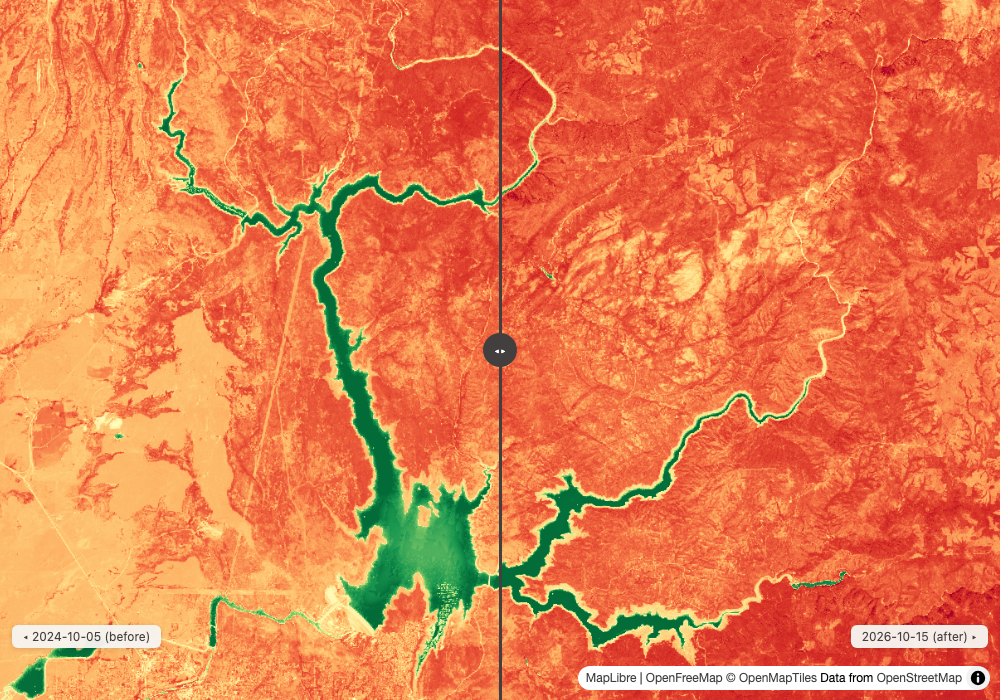
live artifact ↗full read
Our read
Both looks are clear (cloud fractions 0.000591 and 0.011652) and from the same tile, 10SFJ, so the two dates compare like for like. Over the lake box the NDWI mean went from -0.455073209681556 on 2024-10-05 to -0.4990661532661996 on 2026-10-15, and the median from -0.5517482517482517 to -0.5985079688029841. Water scores high on this index, so a lower mean and median point to less open water in the box this October than two Octobers ago. The index says which way, not how many acres: it has not been turned into a surface area, and the box includes shoreline and hills.show the data
geocode("Lake Oroville, California")
source: nominatim name: Lake Oroville, Butte County, California, United States
bbox: [-121.5703521, 39.511624, -121.2810537, 39.7347615]
compare_dates(place="Lake Oroville, California",
window_before="2024-10-01T00:00:00Z/2024-10-25T23:59:59Z",
window_after="2026-10-01T00:00:00Z/2026-10-25T23:59:59Z",
expression="(green-nir)/(green+nir)", max_cloud_cover=20)
tile: 10SFJ
after: S2B_10SFJ_20261015_0_L2A 2026-10-15 cloud 0.011652 mean -0.5834
before: S2B_10SFJ_20241005_0_L2A 2024-10-05 cloud 0.000591 mean -0.5639
delta: -0.0195 delta_pct: -3.5
map_path: /tmp/ft10/out/map-lake-oroville--california---2026-10-15-vs-2024-10-05.html
[our note] code check: compare_dates calls compute_statistics(earth-search, collection, id, expression=expression) with no bbox or aoi, so its means are whole-scene
compute_statistics(earth-search, sentinel-2-l2a, S2B_10SFJ_20241005_0_L2A, expression="(green-nir)/(green+nir)", bbox=lake)
min -0.8785625774473358 max 0.9963031423290203 mean -0.455073209681556
median -0.5517482517482517 std 0.3591717479546868 count 202109.8125 valid_percent 100.0
compute_statistics(earth-search, sentinel-2-l2a, S2B_10SFJ_20261015_0_L2A, expression="(green-nir)/(green+nir)", bbox=lake)
min -0.9872068230277186 max 0.9925650557620818 mean -0.4990661532661996
median -0.5985079688029841 std 0.36099365033807596 count 202109.8125 valid_percent 100.0
Learning → The headline delta is a whole-scene number, not a lake number. compare_dates returned means of -0.5834 and -0.5639 (delta -0.0195) because it computes the expression over the full tile, with no clip. The lake-box means above needed two separate compute_statistics calls with the geocoded bbox, and they differ from the tile means (-0.455 vs -0.5639 in 2024). Read the compare_dates delta as a tile-wide change; it can say 'a little lower' while the lake box moved by a different amount. The swipe map is the part that shows the shoreline.
geocode · compare_dates with a custom NDWI expression · same-tile scene matching · clipped compute_statistics on both dates · swipe map
2
orchard ndvi
almond grower's agronomist
Input
Kern County near Wasco, California: what is the latest clear Sentinel-2 look, and the NDVI over a 10 km box of orchards?
Our read
The latest look is 2026-10-17, and it covers the whole box (covers_aoi_pct 100.0) at 0.002916 cloud, so nothing has to be stitched.
Learning → A box is not a field.
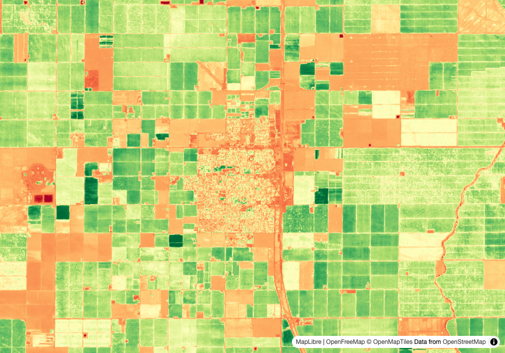
live artifact ↗full read
Our read
The latest look is 2026-10-17, and it covers the whole box (covers_aoi_pct 100.0) at 0.002916 cloud, so nothing has to be stitched. Over the box NDVI has a mean of 0.3993492456793862 and a median of 0.44077134986225897, with the 2nd to 98th percentile spread running from 0.07647202540923528 to 0.7299168975069252. A 10 km box of orchards also holds bare ground, roads and fallow blocks, so the wide spread is what a mixed box looks like; the map shows which blocks sit at the low end.show the data
geocode("Wasco, California")
source: nominatim name: Wasco, Kern County, California, United States
lat/lon: 35.5941238, -119.3409457
bbox: [-119.420787, 35.553704, -119.322811, 35.616087]
(10 km box built around that point, +/-0.045 deg lat) bbox: [-119.3963, 35.5491, -119.2856, 35.6391]
search_imagery(earth-search, [sentinel-2-l2a], bbox, datetime_range="2026-09-25T00:00:00Z/2026-10-25T23:59:59Z", max_cloud_cover=20) 4 items
S2C_11SKV_20261017_0_L2A 2026-10-17 cloud 0.002916 covers_aoi_pct 100.0
S2A_11SKV_20261009_0_L2A 2026-10-09 cloud 0.025786 covers_aoi_pct 100.0
S2C_11SKV_20261007_0_L2A 2026-10-07 cloud 0.002127 covers_aoi_pct 100.0
S2C_11SKV_20260927_0_L2A 2026-09-27 cloud 0.001596 covers_aoi_pct 100.0
recommended: S2C_11SKV_20261017_0_L2A
reason: 0.0% cloud, covers 100.0% of the area, and newest of 4 near-equal scenes; the clearest (0.0% cloud) is from 2026-09-27
compute_statistics(earth-search, sentinel-2-l2a, S2C_11SKV_20261017_0_L2A, expression="(nir-red)/(nir+red)", bbox=[-119.3963, 35.5491, -119.2856, 35.6391])
min -0.42300194931773877 max 0.936523598092419 mean 0.3993492456793862
median 0.44077134986225897 std 0.20412324335027104 count 213030.234375
percentile_2 0.07647202540923528 percentile_98 0.7299168975069252 valid_percent 100.0
clipped_to: [-119.3963, 35.5491, -119.2856, 35.6391]
render_map("Wasco orchards NDVI", bbox, [item layer S2C_11SKV_20261017_0_L2A, expression (nir-red)/(nir+red), rdylgn, rescale -0.2,0.9])
map_path: /tmp/ft10/out/map-wasco-orchards-ndvi.html coverage_pct: 100.0
Learning → A box is not a field. The stats are one set of numbers for everything inside the 10 km square, orchard or not; a grower's question about a specific block needs that block's polygon through aoi_geojson. Also, the box was built by hand around the geocoded point, because geocode for a town returns the town's own bbox (about 9 km by 7 km), not a 10 km square.
search_imagery cloud filter + recommended scene · compute_statistics with an NDVI expression clipped to a bbox · render_map with an expression layer
3
radar through cloud
coastal engineer
Input
Outer Banks, North Carolina: the latest Sentinel-1 radar scene over the barrier islands.
Our read
The newest scene is 2026-10-21 and covers all of the area (covers_aoi_pct 100.0), though valid_percent in the statistics is 83.44, so about a sixth of the box holds no data (the swath edge…
Learning → The first preview came back all white.
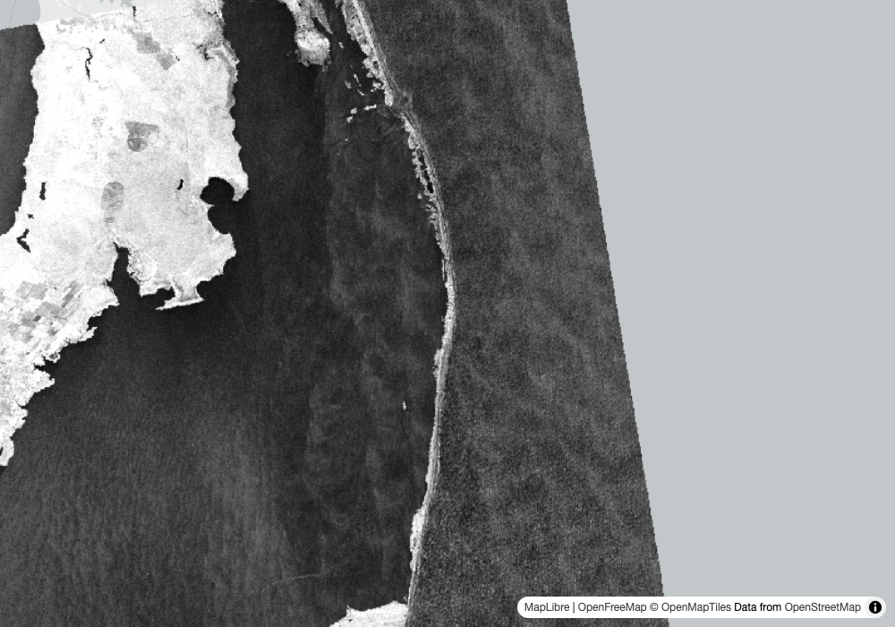
live artifact ↗full read
Our read
The newest scene is 2026-10-21 and covers all of the area (covers_aoi_pct 100.0), though valid_percent in the statistics is 83.44, so about a sixth of the box holds no data (the swath edge shows on the right of the preview). Why radar here: the Outer Banks sit in the path of coastal storms and sea fog, and optical imagery shows cloud tops instead of the ground on those days. Sentinel-1 sends its own microwave pulse and reads the echo, so it works through cloud and in the dark; this pass was acquired at about 23:05 UTC. Smooth water comes back dark and the rough ocean, sand and buildings come back brighter, so the preview separates the sound, the barrier islands and the open Atlantic without any cloud to wait out. Radar gives you the water line and surface roughness, not colour.show the data
geocode("Outer Banks, North Carolina")
source: nominatim name: Outer Banks, Waves, Dare County, North Carolina, 27982, United States
bbox: [-75.7888367, 35.2469037, -75.1488367, 35.8869037]
search_imagery(earth-search, [sentinel-1-grd], bbox, datetime_range="2026-10-01T00:00:00Z/2026-10-25T23:59:59Z") 3 items
S1D_IW_GRDH_1SDV_20261021T230514_20261021T230544_005120_009B33 2026-10-21 ascending covers_aoi_pct 100.0
S1D_IW_GRDH_1SDV_20261016T225729_20261016T225759_005047_0098AC 2026-10-16 ascending covers_aoi_pct 58.2
S1D_IW_GRDH_1SDV_20261009T230514_20261009T230544_004945_00952C 2026-10-09 ascending covers_aoi_pct 100.0
recommended: S1D_IW_GRDH_1SDV_20261021T230514_20261021T230544_005120_009B33
reason: best-covering scene at 100.0% of the area; this collection reports no cloud cover
preview_item(earth-search, sentinel-1-grd, S1D_..._20261021T230514_..._009B33, assets=[vv], rescale="0,0.4", colormap_name=greys_r, bbox=aoi)
fetched: 200, 2259 bytes
compute_statistics(earth-search, sentinel-1-grd, S1D_..._009B33, assets=[vv], bbox=aoi)
vv: min 31.0 max 1218.0 mean 69.47023010253906 median 63.0 std 26.023270068559757
percentile_2 46.0 percentile_98 168.0 valid_percent 83.44
preview_item(... same item, assets=[vv], rescale="30,200", colormap_name=greys_r, bbox=aoi)
fetched: 200, 180087 bytes
render_map("Outer Banks radar, Sentinel-1 VV", aoi, [item layer vv, rescale 30,200, greys_r])
map_path: /tmp/ft10/out/map-outer-banks-radar--sentinel-1-vv.html coverage_pct: 100.0
Learning → The first preview came back all white. I picked rescale 0,0.4 as if the VV band were a backscatter ratio; this collection's vv asset holds raw values of 31 to 1218, so the pixels saturated and the image was a 2259-byte PNG that I opened and saw was blank white, still with HTTP 200. A statistics call told me the real range and the rescale 30,200 fixed it. The first map I rendered carried the wrong rescale and was replaced. Also, the search reports no cloud cover for this collection, which is correct for radar but means 'newest, full coverage' is the only selection rule.
earth-search sentinel-1-grd · covers_aoi_pct and recommended · preview_item on a radar band · compute_statistics to find a rescale · render_map
4
olympic postcard
state parks communications lead
Input
A postcard of the Olympic Peninsula, Washington, from the freshest clear Sentinel-2 scene.
Our read
No single scene covers the whole peninsula: the best one, 2026-10-21 tile 10TDT, covers 43.6% of the geocoded box at 4.039512 cloud, and the clearer scenes cover only a sliver.
Learning → The place name is bigger than any one scene.
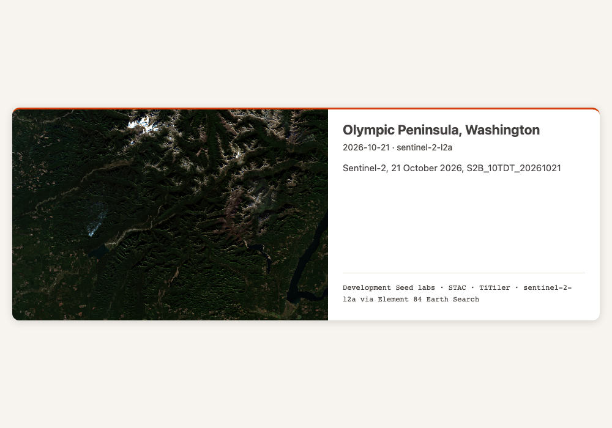
live artifact ↗full read
Our read
No single scene covers the whole peninsula: the best one, 2026-10-21 tile 10TDT, covers 43.6% of the geocoded box at 4.039512 cloud, and the clearer scenes cover only a sliver. So the postcard shows the part of the peninsula that one fresh scene does cover, the central Olympics and the coast west of them, cropped to bbox [-124.2, 47.3, -123.0, 47.84]. It is a single file with the image embedded, so it can be shared without live tile links. Where it gets posted is the communications lead's decision.show the data
geocode("Olympic Peninsula, Washington")
source: nominatim name: Olympic Peninsula, Washington, United States
bbox: [-124.7333752, 46.815491, -122.6100875, 48.3917695]
search_imagery(earth-search, [sentinel-2-l2a], bbox, datetime_range="2026-09-25T00:00:00Z/2026-10-25T23:59:59Z", max_cloud_cover=10) 5 items
S2C_10TDS_20261023_0_L2A 2026-10-23 cloud 9.011774 covers_aoi_pct 2.5
S2A_10TDS_20261021_1_L2A 2026-10-21 cloud 6.489726 covers_aoi_pct 0.6
S2B_10TDS_20261021_0_L2A 2026-10-21 cloud 0.24 covers_aoi_pct 6.0
S2B_10TES_20261021_0_L2A 2026-10-21 cloud 0.05 covers_aoi_pct 1.6
S2B_10TDT_20261021_0_L2A 2026-10-21 cloud 4.039512 covers_aoi_pct 43.6
recommended: S2B_10TDT_20261021_0_L2A
reason: 4.0% cloud but covers 43.6% of the area; the clearest scene (0.1% cloud) covers 1.6%. No single scene covers this area and no same-day set does either within these 5 results; raise limit or relax max_cloud_cover to find one
render_postcard(earth-search, sentinel-2-l2a, S2B_10TDT_20261021_0_L2A, place="Olympic Peninsula, Washington", date="2026-10-21",
assets=[visual], bbox=[-124.2, 47.3, -123.0, 47.84], caption="Sentinel-2, 21 October 2026, S2B_10TDT_20261021")
path: /tmp/ft10/out/postcard-olympic-peninsula--washington-2026-10-21.html
Learning → The place name is bigger than any one scene. The results already show at least three tiles (10TDS, 10TES, 10TDT), so 'freshest clear scene' has no single answer, and the tool says so in its reason line. I chose the 43.6% scene and cropped to a bbox inside it; the card was not checked by eye for cloud over the high peaks, and everything north of 47.84 is outside the picture. render_postcard does take a caption: the postcard was re-rendered once with the scene id S2B_10TDT_20261021 in it. A postcard of the whole peninsula would need render_postcard's fill_item_ids to mosaic same-day scenes, which I did not try.
geocode · search_imagery recommended + honest coverage reason · render_postcard with a bbox crop, embedded image
5
rainier in 3d
mountaineering guide
Input
Mount Rainier in 3D, draped with the latest clear Sentinel-2 look.
Our read
The recommended scene is 2026-10-21, tile 10TES, at 0.05366 cloud.
Learning → The docstring has no mountain-specific exaggeration advice,
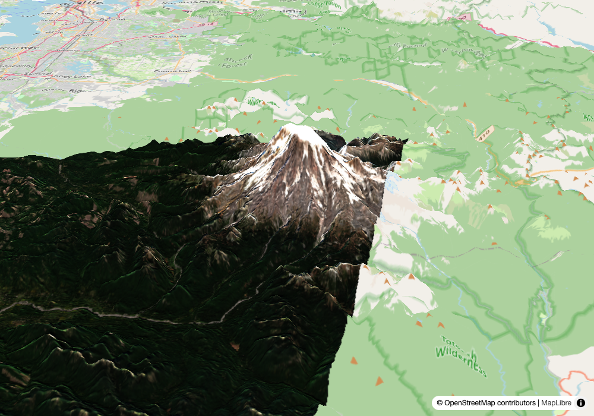
live artifact ↗full read
Our read
The recommended scene is 2026-10-21, tile 10TES, at 0.05366 cloud. It covers 76.0% of the geocoded box, so I narrowed the 3D view to bbox [-121.9, 46.72, -121.64, 46.95], which sits inside that scene, and the tool reports coverage_pct 100.0 for it. Terrain comes from the keyless Terrarium elevation tiles. The docstring gives a range of 1.0 to 3.0 and defaults to 1.5 but names no value for mountains, so I took 2.0 as a middle setting for a tall peak; the page has a slider to change it. For a guide this is a route-reading and orientation view, not a hazard map.show the data
geocode("Mount Rainier, Washington")
source: nominatim name: Mount Rainier, Pierce County, Washington, United States
lat/lon: 46.8522029, -121.7575158
bbox: [-121.9075158, 46.7022029, -121.60751579999999, 47.0022029]
search_imagery(earth-search, [sentinel-2-l2a], bbox, datetime_range="2026-08-25T00:00:00Z/2026-10-25T23:59:59Z", max_cloud_cover=10) 5 items
S2C_10TFS_20261023_0_L2A 2026-10-23 cloud 1.891742 covers_aoi_pct 27.6
S2B_10TES_20261021_0_L2A 2026-10-21 cloud 0.05366 covers_aoi_pct 76.0
S2B_10TFS_20261021_0_L2A 2026-10-21 cloud 1.59 covers_aoi_pct 7.1
S2B_10TET_20261021_0_L2A 2026-10-21 cloud 0.87 covers_aoi_pct 47.6
S2B_10TFT_20261021_0_L2A 2026-10-21 cloud 0.0 covers_aoi_pct 12.8
recommended: S2B_10TES_20261021_0_L2A
reason: 0.1% cloud but covers 76.0% of the area; the clearest scene (0.0% cloud) covers 12.8%. No single scene covers this area and no same-day set does either within these 5 results; raise limit or relax max_cloud_cover to find one
render_map_3d("Mount Rainier in 3D", bbox=[-121.9, 46.72, -121.64, 46.95],
layer=item S2B_10TES_20261021_0_L2A visual, bbox [-123.00025, 45.963114, -121.635457, 46.9537], exaggeration=2.0)
path: /tmp/ft10/out/map3d-mount-rainier-in-3d.html
state: exaggeration 2.0, terrain true, coverage_pct 100.0
Learning → The docstring has no mountain-specific exaggeration advice, only the 1.0 to 3.0 range and a default of 1.5, so the 2.0 is my judgment, not the tool's recommendation. The 3D page was written but not opened in a browser by me, so how the drape looks over the summit and whether the scene's snow shows as intended is unchecked. The geocoded bbox was clipped to fit one scene, which cut the east side of the mountain out of the view.
geocode · search_imagery recommended scene · render_map_3d terrain drape with exaggeration slider
Round 2 — events and weather
6
events near manila
county emergency manager
Input
What is happening right now within a few hundred km of Manila, Philippines?
Our read
Nothing is active within about 330 km of Manila: EONET listed 0 open events in that box over 30 days, and the GDACS half of the call timed out, so the all-clear is EONET's alone.
Learning → The all-clear rests on half the sources.
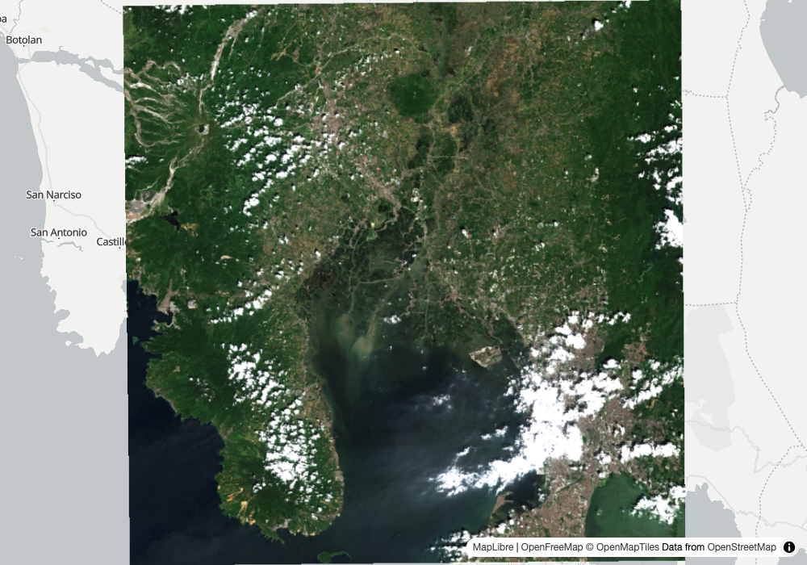
live artifact ↗full read
Our read
Nothing is active within about 330 km of Manila: EONET listed 0 open events in that box over 30 days, and the GDACS half of the call timed out, so the all-clear is EONET's alone. The nearest active event the worldwide call returns is Super Typhoon Champi, at [126.3, 30.7] with a position stamped 2026-10-25T12:00:00Z, 1871.8 km from the Manila geocode. That is not a few hundred km, so it is not a threat to the city on this evidence. The map shows Manila under the Sentinel-2 scene of 2026-10-15 (7.7% cloud, 70.7% of the search box), and Champi is a toggleable layer well off the edge of that frame. The imagery is ten days old, so it is a baseline of the city, not the present.show the data
geocode("Manila, Philippines")
source: nominatim name: Manila, Capital District, Metro Manila, Philippines
lat/lon: 14.5904492, 120.9803621
active_events(bbox=[117.98, 11.59, 123.98, 17.59], days=30) (about 330 km each way)
eonet: []
eonet_note: EONET listed 0 open events in 30 days
gdacs: []
gdacs_error: The read operation timed out
active_events(days=30) worldwide, to find the nearest region
eonet_note: EONET listed 47 open events in 30 days
gdacs_error: The read operation timed out
by category: Wildfires 34, Sea and Lake Ice 10, Severe Storms 3
nearest to Manila (great-circle, my own arithmetic): Super Typhoon Champi 1871.8 km; Tropical Cyclone Agueda 8384.5 km
Super Typhoon Champi Severe Storms 2026-10-25T12:00:00Z [126.3, 30.7]
search_imagery(earth-search, sentinel-2-l2a, bbox=[120.63, 14.24, 121.33, 14.94], 2026-09-25/2026-10-25, max_cloud_cover=40, limit=5) 5 items
recommended: S2A_51PTS_20261015_0_L2A cloud 7.688193 covers_aoi_pct 70.7
S2B_50PRB_20261018_0_L2A 2026-10-18T02:33:38Z cloud 22.73 covers 22.1
S2A_50PRA_20261015_0_L2A 2026-10-15T02:34:04Z cloud 3.94 covers 7.4
S2A_51PTR_20261015_0_L2A 2026-10-15T02:34:02Z cloud 16.37 covers 28.2
S2A_50PRB_20261015_0_L2A 2026-10-15T02:33:50Z cloud 3.55 covers 22.1
S2A_51PTS_20261015_0_L2A 2026-10-15T02:33:48Z cloud 7.69 covers 70.7
reason: No single scene covers this area and no same-day set does either within these 5 results
render_map("Manila: latest Sentinel-2, nearest active event layer", bbox=[120.2, 14.37, 121.24, 15.37])
layers: Sentinel-2 2026-10-15 (S2A_51PTS_20261015_0_L2A, visual); Super Typhoon Champi (EONET) (geojson point)
map: ft10-manila-events.html
Learning → The all-clear rests on half the sources. GDACS returned a read timeout on both events calls, and EONET found nothing in the box, so "nothing near Manila" is a statement about EONET only. Also: the map is framed on the city and the one event layer is 1,870 km away, so the event dot is off screen; a wide frame would show the typhoon but shrink Manila to a blur.
geocode · active_events with a bbox, then worldwide as the fallback · search_imagery picks the scene · render_map with imagery and a geojson events layer
7
biggest event
wire-service reporter
Input
What is the biggest event happening in the world today, and what does the latest satellite picture of it show?
Our read
I took Super Typhoon Champi as the most significant event: it is the only super typhoon in the list, and the call gives no size figure for the wildfires to compare against, so this is a…
Learning → EONET carries no size for a wildfire or a storm here
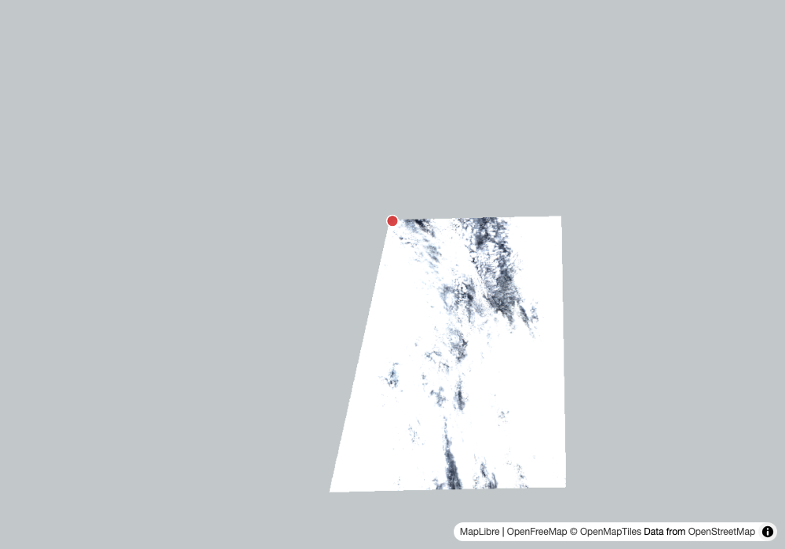
live artifact ↗full read
Our read
I took Super Typhoon Champi as the most significant event: it is the only super typhoon in the list, and the call gives no size figure for the wildfires to compare against, so this is a judgement and not a ranking from the data. The Sentinel-2 scene on the map was acquired 2026-10-25 02:19Z, about ten hours before the 12:00Z position fix the call reports, so this is the before. It is also nearly all cloud (S2B_52RBU: 96.5% cloud, covering 11.2% of the search box), and no scene found covers the area. The recommended scene was S2B_52RBT (90.5% cloud, 7.8% of the search box), but I drew S2B_52RBU instead: it is the clearest of the five that reaches the typhoon's latitude (its footprint runs up to 30.717857 N, against the 30.7 N fix), so the choice is mine, not the tool's. The next possible optical Sentinel-2 look is 2026-10-28 02:28 UTC (track distance 94.6 km, as of run time). A radar pass comes sooner and sees through cloud: Sentinel-1C at 2026-10-26 09:13 UTC (94.8 km as of run time) and Sentinel-1A at 2026-10-27 21:53 UTC (34.1 km as of run time; a re-run gave different distances, so treat them as indicative). Those are possible captures from swath geometry, not a promised acquisition.show the data
active_events(days=30)
eonet_note: EONET listed 47 open events in 30 days
gdacs_error: The read operation timed out
Severe Storms (3):
Super Typhoon Champi 2026-10-25T12:00:00Z [126.3, 30.7] EONET_25339
Hurricane Vance 2026-10-25T12:00:00Z [-103.8, 14.6] EONET_25589
Tropical Cyclone Agueda 2026-10-23T18:00:00Z [47.7, -5.7] EONET_25457
Wildfires 34 (largest named: none carries a size in this output); Sea and Lake Ice 10
search_imagery(earth-search, sentinel-2-l2a, bbox=[124.8, 29.2, 127.8, 32.2], 2026-09-25/2026-10-25, limit=5) 5 items
recommended: S2B_52RBT_20261025_0_L2A cloud 90.451568 covers_aoi_pct 7.8
reason: every scene is over 30% cloud, so this is the least bad
S2B_51RYN_20261025_0_L2A 2026-10-25T02:19:33Z cloud 100 covers 2.6
S2B_52RBT_20261025_0_L2A 2026-10-25T02:19:30Z cloud 90.45 covers 7.8
S2B_52RCT_20261025_0_L2A 2026-10-25T02:19:26Z cloud 80.60 covers 6.1
S2B_51RYP_20261025_0_L2A 2026-10-25T02:19:21Z cloud 100 covers 1.6
S2B_52RBU_20261025_0_L2A 2026-10-25T02:19:15Z cloud 96.48 covers 11.2 bbox [126.035289, 29.709002, 127.033276, 30.717857]
reason: No single scene covers this area and no same-day set does either within these 5 results
next_pass(30.7, 126.3, days=3)
sentinel-3B 2026-10-26 01:56 UTC optical track_distance_km 44.7
sentinel-1A 2026-10-26 09:10 UTC radar track_distance_km 162.5
sentinel-1C 2026-10-26 09:13 UTC radar track_distance_km 94.8
sentinel-3B 2026-10-27 01:30 UTC optical track_distance_km 614.5
sentinel-3A 2026-10-27 02:08 UTC optical track_distance_km 310.9
sentinel-1A 2026-10-27 21:53 UTC radar track_distance_km 34.1
sentinel-1C 2026-10-27 21:57 UTC radar track_distance_km 83.5
sentinel-3A 2026-10-28 01:42 UTC optical track_distance_km 302.0
sentinel-2B 2026-10-28 02:28 UTC optical track_distance_km 94.6
note: swath geometry from live TLEs, not the acquisition plan; a pass is a possible capture, and imagery reaches public catalogs hours to a day later
render_map("Super Typhoon Champi: the before", bbox=[125.3, 29.5, 127.3, 31.5])
layers: Sentinel-2 2026-10-25 02:19Z (S2B_52RBU_20261025_0_L2A, visual); Champi position 2026-10-25 12:00Z (geojson point)
map: ft10-champi-before.html
Learning → EONET carries no size for a wildfire or a storm here, so "most significant" is the reporter's call, not the tool's. GDACS timed out, so only EONET's list was available. Also, the Sentinel-2 scene here is almost all cloud, so the Sentinel-1 radar passes, which the call says see through cloud, may be the more useful next look.
active_events worldwide · search_imagery with the cloud caveat · before-versus-after read · next_pass for the next look, optical and radar
8
summit weather and hrrr
Mt Hood Meadows ski area operations
Input
What is the weather doing on Mt Hood over the next days, and what will it be tomorrow at 18Z up there?
Our read
Two different pictures, and they do not agree.
Learning → The two sources disagree by about ten degrees and the tools do not say why.
full read
Our read
Two different pictures, and they do not agree. The weather summary is for a grid cell at 3322 m, and its own elevation_note says "readings are for a grid cell at 3322 m (45.363, -121.682) — say so if the place spans a big elevation range, the valley is warmer than this". At that height it has tomorrow (2026-10-26) between -11.2 and -9.1 C with 37.9 mm of precipitation and wind to 41.9 km/h, with precipitation through 2026-10-28 and wind above 38 km/h through 2026-10-27 (12.0 km/h on 2026-10-28). The HRRR box around the summit for 2026-10-26 18:00 UTC reads a mean of 273.02545166015625 K over 16 cells, min 268.33404541015625 K, max 277.20904541015625 K. In Celsius, subtracting 273.15: mean 273.02545 - 273.15 = -0.12 C; min 268.33405 - 273.15 = -4.82 C; max 277.20905 - 273.15 = 4.06 C. So HRRR says about freezing across the box, while the 3322 m cell says about -10 C. I did not work out which is right. One possible reason is terrain height (the weather cell is at 3322 m); HRRR's own terrain height was not checked. Neither is the lift-served mountain, and nothing here is a base-area reading. I drew no map for this case.show the data
geocode("Mt Hood, Oregon")
source: nominatim name: Mount Hood, Hood River County, Oregon, United States
lat/lon: 45.3735129, -121.695878
weather_summary(45.3735129, -121.695878)
daily (2026-10-18 to 2026-10-31, 14 days; the first 7 are past days, left out here):
time 2026-10-25 2026-10-26 2026-10-27 2026-10-28 2026-10-29 2026-10-30 2026-10-31
temperature_2m_max C -6.9 -9.1 -9.9 -11.1 -8.9 -7.2 -7.3
temperature_2m_min C -9.1 -11.2 -12.1 -12.6 -15.2 -16.0 -14.2
precipitation_sum mm 9.5 37.9 3.92 17.7 0.1 0.0 0.0
wind_speed_10m_max km/h 35.0 41.9 38.8 12.0 6.8 6.4 6.4
wind_direction_dominant deg 223 248 270 235 141 138 99
grid_cell: latitude 45.36344, longitude -121.68162, elevation 3322.0
elevation_note: readings are for a grid cell at 3322 m (45.363, -121.682) — say so if the place spans a big elevation range, the valley is warmer than this
compute_statistics(zarr, noaa-hrrr-forecast, TMP, bbox=[-121.75, 45.32, -121.65, 45.42], sel={"valid_time": "2026-10-26T18:00:00"})
TMP: min 268.33404541015625 max 277.20904541015625 mean 273.02545166015625
median 273.58404541015625 std 2.254928277814161 count 16
percentile_2 268.5590454101563 percentile_98 276.92779541015625
clipped_to: [-121.75, 45.32, -121.65, 45.42]
dataset: NOAA HRRR forecast, 2 m temperature (University of Utah): TMP (air temperature 2 m above ground), K
units: K
sel: {"time": "2026-10-26 18:00:00"}
caveats: []
Learning → The two sources disagree by about ten degrees and the tools do not say why. The weather grid cell is at 3322 m. One possible reason is that a 3 km HRRR box around the summit averages in lower slopes, but I did not check HRRR's own terrain height, so that is a guess. Operations would want the base-area and mid-mountain number; I ran weather_summary only at the summit point and HRRR only over the summit box, so this card has no lower-elevation reading. The stats also come back in kelvin, so the conversion is left to the reader.
weather_summary with its elevation note · HRRR zarr statistics for a small box · kelvin to Celsius shown by hand · an honest no-map
9
smoke over spokane
Spokane Regional Clean Air Agency
Input
How much smoke is over Spokane now, and what does the model say 24 hours from now?
Our read
Clear now and clear tomorrow.
Learning → A correct map can look broken.
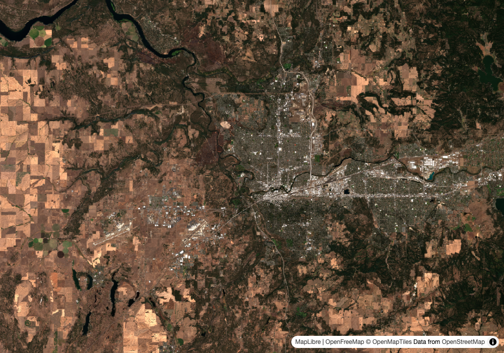
live artifact ↗full read
Our read
Clear now and clear tomorrow. The model has 0.1 µg/m³ at 2026-10-25 22:00Z and 0.3 µg/m³ at 2026-10-26 22:00Z, both far under the tool's own "under 5 clear" line. The "24 hours ahead" frame is valid 2026-10-26T22:00Z, forecast hour 28 of the 18Z run, exactly 24 h after the "now" frame of 2026-10-25T22:00Z. The smoke layer is transparent where air is clear, so on the map you see the Sentinel-2 scene of 2026-10-15 (0.0% cloud, full coverage) with no smoke drawn over it, and that blank is the answer, not a failure. This is model guidance, not a monitor reading, and the scale is not the AQI; a regulator should read it next to the agency's sensors.show the data
geocode("Spokane, Washington")
source: nominatim name: Spokane, Spokane County, Washington, United States
lat/lon: 47.6571934, -117.42351
bbox: [-117.6039994, 47.5867785, -117.3038581, 47.7587975]
smoke_forecast(47.6571934, -117.42351, 24)
run: 2026-10-25T18:00Z forecast_hour: 28
now_valid_time: 2026-10-25T22:00Z now_ugm3: 0.1
valid_time: 2026-10-26T22:00Z forecast_ugm3: 0.3
units: µg/m³ near-surface smoke mass density
source: NOAA HRRR, band MASSDEN (76), tiler https://raster.eoapi.dev
caveat: this is model guidance from NOAA HRRR, not a measurement; a smoke plume's timing and edges can be off by hours and miles
caveat: the model grid is 3 km, so a valley or a ridge can read differently from the cell value
caveat: HRRR covers the contiguous US only
caveat: approximate reading scale in µg/m³, not the AQI: under 5 clear, 5 to 35 light, 35 to 150 moderate, above 150 heavy
search_imagery(earth-search, sentinel-2-l2a, bbox=Spokane, 2026-10-01/2026-10-25, max_cloud_cover=30, limit=5) 4 items
recommended: S2B_11TMN_20261015_0_L2A cloud 0.000123 covers_aoi_pct 100.0
reason: clearest (0.0% cloud) and best-covering (100.0% of the area), not a tradeoff
S2B_11TMN_20261015_0_L2A 2026-10-15T19:01:14Z cloud 0.000123 covers 100.0
S2C_11TMN_20261010_0_L2A 2026-10-10T19:01:17Z cloud 25.72 covers 100.0
S2C_11TMN_20261007_0_L2A 2026-10-07T18:51:20Z cloud 0.78 covers 100.0
S2B_11TMN_20261005_0_L2A 2026-10-05T19:01:15Z cloud 29.31 covers 100.0
render_map("Spokane: smoke forecast over Sentinel-2", bbox=[-117.75, 47.5, -117.15, 47.85])
layers: Sentinel-2 2026-10-15 (S2B_11TMN_20261015_0_L2A, visual); HRRR smoke valid 2026-10-26 22:00Z (raster, tiles from smoke_forecast)
map: ft10-spokane-smoke.html
Learning → A correct map can look broken. With air this clean the smoke layer draws nothing, so the picture is plain imagery. The map subtitle says clear air is transparent, but a viewer of the card has to be told, so the answer says it too. A smoke day in the same place would be the better demo.
smoke_forecast now and ahead · the tile template as a render_map layer · caveats returned with the numbers · imagery picked by cloud and coverage
10
forecast vs history
utility load forecaster, Phoenix
Input
What is tomorrow's temperature across the Phoenix metro, and can I see a past summer day for comparison?
Our read
HRRR is the forecast.
Learning → The two stores do not share a time key or a resolution.
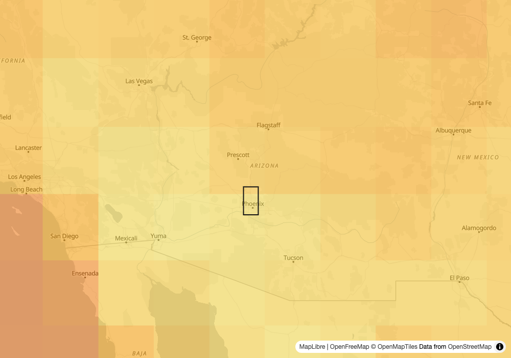
live artifact ↗full read
Our read
HRRR is the forecast. ERA5 is history. The HRRR box over the metro for 2026-10-26 18:00 UTC reads a mean of 298.6933787434896 K over 375 cells. Subtracting 273.15: mean 298.69338 - 273.15 = 25.54 C; min 292.95905 - 273.15 = 19.81 C; max 299.95905 - 273.15 = 26.81 C. That is the number for one hour tomorrow, 18Z (11:00 MST). The map is ERA5 reanalysis for 2022-07-15 18:00 UTC, 11:00 MST (the store ends 2023-01-10, so it can only draw a past day; the store is 6-hourly, so 18:00 is a stored step). It shows that mid-July morning on a coarse global grid (240 by 121 cells, roughly 1.5 degrees) and sets no number for tomorrow. I read no ERA5 temperature value off the map, so I make no claim about how hot that day was, so the only figures here are the HRRR ones. Load forecasting would use the HRRR hourly series; this card shows one hour.show the data
geocode("Phoenix, Arizona")
source: nominatim name: Phoenix, Maricopa County, Arizona, United States
lat/lon: 33.4484367, -112.074141
bbox: [-112.3240289, 33.2904827, -111.9255304, 33.9183794]
compute_statistics(zarr, noaa-hrrr-forecast, TMP, bbox=Phoenix, sel={"valid_time": "2026-10-26T18:00:00"})
TMP: min 292.95904541015625 max 299.95904541015625 mean 298.6933787434896
median 298.89654541015625 std 0.9132613110288984 count 375
percentile_2 296.6140454101563 percentile_98 299.83404541015625
clipped_to: [-112.3240289, 33.2904827, -111.9255304, 33.9183794]
dataset: NOAA HRRR forecast, 2 m temperature (University of Utah): TMP (air temperature 2 m above ground), K
units: K
sel: {"time": "2026-10-26 18:00:00"}
caveats: []
tile_url_template(zarr, weatherbench2-era5, 2m_temperature, sel={"time": "2022-07-15T18:00"})
https://titiler.xyz/zarr/tiles/WebMercatorQuad/{z}/{x}/{y}.png?url=https%3A%2F%2Fstorage.googleapis.com%2Fweatherbench2%2Fdatasets%2Fera5%2F1959-2023_01_10-6h-240x121_equiangular_with_poles_conservative.zarr&variable=2m_temperature&sel=time%3Dnearest%3A%3A2022-07-15T18%3A00&rescale=220%2C320&colormap_name=inferno
one tile fetched (z5 x6 y13) from the earlier 21:00 template to confirm the host draws: HTTP 200, 1236 bytes (the 18:00 template was not fetched)
render_map("Phoenix: ERA5 2 m temperature, 2022-07-15 18:00 UTC (history)", bbox=[-118, 30, -106, 38])
layers: ERA5 2m_temperature 2022-07-15 18Z (raster, opacity 0.55); Phoenix metro bbox (HRRR stats box) (geojson outline, bbox [-112.3240289, 33.2904827, -111.9255304, 33.9183794])
map: ft10-phoenix-era5.html
Learning → The two stores do not share a time key or a resolution. HRRR is a 3 km forecast picked by valid_time and ERA5 is a 1.5 degree history picked by time, so one question needs two differently shaped calls, and the ERA5 layer is a blur at metro scale. The stats also arrive in kelvin with no conversion.
HRRR zarr statistics in kelvin · ERA5 zarr tile template as a map layer · forecast and history kept apart · tile fetched to prove the template
Round 3 — discovery and offline
11
land cover
urban planner in Nairobi
Input
Which land cover datasets cover Nairobi, and can you draw one?
Our read
Seven land cover or land cover related collections on Planetary Computer cover Nairobi, and each one is flagged covers_aoi=True.
Learning → The first tile template draws grey.
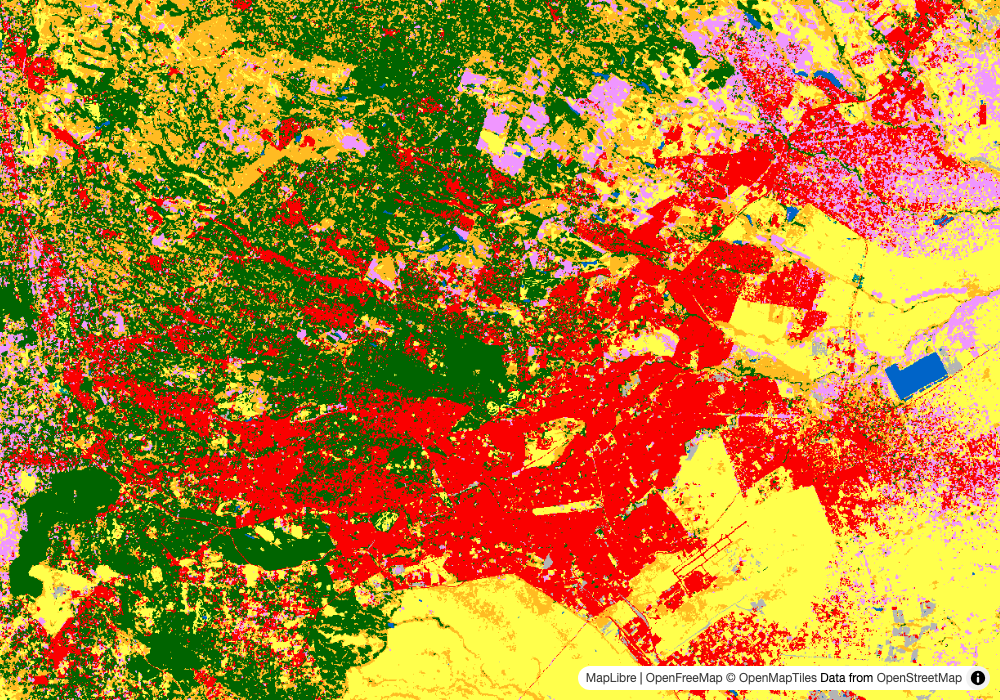
live artifact ↗full read
Our read
Seven land cover or land cover related collections on Planetary Computer cover Nairobi, and each one is flagged covers_aoi=True. One of them, HGB, is a biomass map at 300 m, not land cover, so it is a loose keyword match. I picked ESA WorldCover because it is the 10 m one with a free CC-BY-4.0 licence and two vintages. Its 2021 tile covers 100.0% of the city box, and the map is that one tile with the class colours switched on. The two Esri 10 m 9-class collections (io-lulc-9-class and io-lulc-annual-v02) are the alternatives if the planner wants a yearly series instead.show the data
search_datasets("land cover", place="Nairobi")
planetary-computer/esa-cci-lc gsd=None covers_aoi=True ESA Climate Change Initiative Land Cover Maps (Cloud Optimized GeoTIFF)
planetary-computer/esa-cci-lc-netcdf gsd=None covers_aoi=True ESA Climate Change Initiative Land Cover Maps (NetCDF)
planetary-computer/esa-worldcover gsd=None covers_aoi=True ESA WorldCover
planetary-computer/hgb gsd=300.0 covers_aoi=True HGB: Harmonized Global Biomass for 2010
planetary-computer/io-lulc gsd=None covers_aoi=True Esri 10-Meter Land Cover (10-class)
planetary-computer/io-lulc-9-class gsd=None covers_aoi=True 10m Annual Land Use Land Cover (9-class) V1
planetary-computer/io-lulc-annual-v02 gsd=None covers_aoi=True 10m Annual Land Use Land Cover (9-class) V2
describe_collection("planetary-computer", "esa-worldcover")
title: ESA WorldCover
extent: [-180, -60, 180, 82.75] ['2020-01-01T00:00:00Z', '2021-12-31T23:59:59Z']
license: CC-BY-4.0
assets: {'map': 'Land Cover Classes', 'input_quality': 'Classification Input Data Quality'}
search_imagery("planetary-computer", ["esa-worldcover"], bbox=[36.633,-1.359,37.053,-1.108], limit=5)
count: 2
ESA_WorldCover_10m_2021_v200_S03E036 2021-01-01T00:00:00Z covers 100.0
ESA_WorldCover_10m_2020_v100_S03E036 2020-01-01T00:00:00Z covers 100.0
recommended: ESA_WorldCover_10m_2021_v200_S03E036 reason: best-covering scene at 100.0% of the area; this collection reports no cloud cover
tile_url_template("planetary-computer", "esa-worldcover", "ESA_WorldCover_10m_2021_v200_S03E036", assets=["map"])
https://planetarycomputer.microsoft.com/api/data/v1/mosaic/f062509104d54e632c4cb7f578cd25d5/tiles/WebMercatorQuad/{z}/{x}/{y}@1x.png?collection=esa-worldcover&assets=map
(one 256 px tile of this came back 8-bit gray+alpha: raw class codes, no colour)
tile_url_template(..., assets=["map"], colormap_name="esa-worldcover")
https://planetarycomputer.microsoft.com/api/data/v1/mosaic/f062509104d54e632c4cb7f578cd25d5/tiles/WebMercatorQuad/{z}/{x}/{y}@1x.png?collection=esa-worldcover&assets=map&colormap_name=esa-worldcover
(same tile came back 8-bit/color RGBA)
render_map(...)
/tmp/ft10/out/map-nairobi-land-cover--esa-worldcover-2021.html layers: ['ESA WorldCover 2021 (10 m)']
(the tile URL draws through a mosaic hash, f062509104d5..., not the item id)
Learning → The first tile template draws grey.
tile_url_template for WorldCover with only assets=["map"] returned a template whose tile came back as an 8-bit gray+alpha PNG: raw class codes, which no planner can read. Adding colormap_name="esa-worldcover" gave an RGBA tile and the map uses that. The tool does not say a categorical layer needs a colormap, so the caller has to know. Also, search_datasets gives gsd=None for WorldCover and the Esri layers even though both are 10 m by name, so a max_gsd filter would have dropped them.search_datasets by place · describe_collection · tile_url_template with a named colormap · categorical layer on render_map
12
dhaka landsat
flood-mapping NGO in Dhaka
Input
Which collections cover Dhaka at 30 m or better, and what is the latest Landsat scene over it?
Our read
Twenty collections came back for Dhaka with max_gsd=30.
Learning → The preview is the whole scene, not Dhaka.
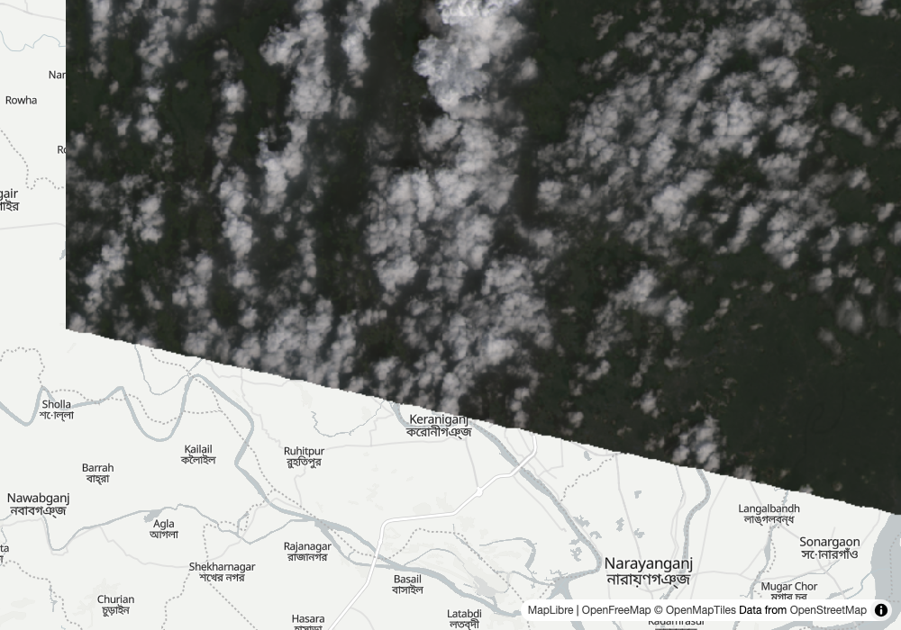
live artifact ↗full read
Our read
Twenty collections came back for Dhaka with max_gsd=30. The ones with a stated resolution at 30 m or better are Planet NICFI basemaps at 4.77 m, Sentinel-2 at 10 m, and Landsat, HLS and HREA at 30 m. The rest report no resolution, including JRC Global Surface Water and the MODIS products (the MODIS titles say 250 m and 500 m), so they passed the filter without a number. For the latest Landsat scene, five Landsat 8 and 9 scenes came back, all covering 100.0% of the city box. The newest by date is LC08_L2SP_137044_20261009_02_T1 at 32.15% cloud. The tool recommends its same-day neighbour LC08_L2SP_137043_20261009_02_T1 at 25.68% cloud, and that is the one drawn.show the data
geocode("Dhaka, Bangladesh")
ঢাকা, ঢাকা মহানগর, ঢাকা জেলা, ঢাকা বিভাগ, 1215, বাংলাদেশ bbox=[90.2290144, 23.6043863, 90.5490144, 23.9243863]
search_datasets("imagery", place="Dhaka, Bangladesh", max_gsd=30)
count: 20
planetary-computer/planet-nicfi-analytic gsd=4.77 covers_aoi=True Planet-NICFI Basemaps (Analytic)
planetary-computer/planet-nicfi-visual gsd=4.77 covers_aoi=True Planet-NICFI Basemaps (Visual)
planetary-computer/sentinel-2-l2a gsd=10.0 covers_aoi=True Sentinel-2 Level-2A
earth-search/landsat-c2-l2 gsd=30.0 covers_aoi=True Landsat Collection 2 Level-2
planetary-computer/hls2-l30 gsd=30.0 covers_aoi=True Harmonized Landsat Sentinel-2 (HLS) Version 2.0, Landsat Data
planetary-computer/hls2-s30 gsd=30.0 covers_aoi=True Harmonized Landsat Sentinel-2 (HLS) Version 2.0, Sentinel-2 Data
planetary-computer/hrea gsd=30.0 covers_aoi=True HREA: High Resolution Electricity Access
planetary-computer/landsat-c2-l2 gsd=30.0 covers_aoi=True Landsat Collection 2 Level-2
veda/facebook_population_density gsd=None covers_aoi=True Population Density Maps using satellite imagery built by Meta
veda/la-fires-maxar gsd=None covers_aoi=True MAXAR Commercial Satellite Imagery (2025 Eaton Fire)
veda/tx-flood-maxar gsd=None covers_aoi=True MAXAR Commercial Satellite Imagery (2025 Texas Flood - Post)
veda/tx-flood-maxar-pre gsd=None covers_aoi=True MAXAR Commercial Satellite Imagery (2025 Texas Flood - Pre)
planetary-computer/esa-worldcover gsd=None covers_aoi=True ESA WorldCover
planetary-computer/io-lulc gsd=None covers_aoi=True Esri 10-Meter Land Cover (10-class)
planetary-computer/io-lulc-9-class gsd=None covers_aoi=True 10m Annual Land Use Land Cover (9-class) V1
planetary-computer/io-lulc-annual-v02 gsd=None covers_aoi=True 10m Annual Land Use Land Cover (9-class) V2
planetary-computer/jrc-gsw gsd=None covers_aoi=True JRC Global Surface Water
planetary-computer/modis-09A1-061 gsd=None covers_aoi=True MODIS Surface Reflectance 8-Day (500m)
planetary-computer/modis-09Q1-061 gsd=None covers_aoi=True MODIS Surface Reflectance 8-Day (250m)
planetary-computer/modis-43A4-061 gsd=None covers_aoi=True MODIS Nadir BRDF-Adjusted Reflectance (NBAR) Daily
search_imagery("planetary-computer", ["landsat-c2-l2"], place="Dhaka, Bangladesh", limit=5)
count: 5
LC08_L2SP_137044_20261009_02_T1 2026-10-09T04:24:51.891288Z cloud 32.15 covers 100.0
LC08_L2SP_137043_20261009_02_T1 2026-10-09T04:24:27.996011Z cloud 25.68 covers 100.0
LC09_L2SP_137044_20261001_02_T1 2026-10-01T04:24:55.007702Z cloud 30.12 covers 100.0
LC09_L2SP_137043_20261001_02_T1 2026-10-01T04:24:31.103979Z cloud 31.73 covers 100.0
LC08_L2SP_137044_20260923_02_T1 2026-09-23T04:24:47.113986Z cloud 80.49 covers 100.0
recommended: {"id": "LC08_L2SP_137043_20261009_02_T1", "covers_aoi_pct": 100.0, "cloud_cover": 25.68, "reason": "clearest (25.7% cloud) and best-covering (100.0% of the area), not a tradeoff"}
preview_item("planetary-computer", "landsat-c2-l2", "LC08_L2SP_137043_20261009_02_T1", bbox=)
{"preview_url": "https://planetarycomputer.microsoft.com/api/data/v1/item/preview.png?collection=landsat-c2-l2&item=LC08_L2SP_137043_20261009_02_T1&assets=red&assets=green&assets=blue&color_formula=gamma%20RGB%202.7,%20saturation%201.5,%20sigmoidal%20RGB%2015%200.55&format=png", "backend": "pc-data-api"}
tile_url_template("planetary-computer", "landsat-c2-l2", "LC08_L2SP_137043_20261009_02_T1")
https://planetarycomputer.microsoft.com/api/data/v1/mosaic/ab7a7ae6e209771a6dc4351127ca09b0/tiles/WebMercatorQuad/{z}/{x}/{y}@1x.png?collection=landsat-c2-l2&assets=red&assets=green&assets=blue
render_map(...)
/tmp/ft10/out/map-dhaka--landsat-8-scene-of-2026-10-09.html layers: ['Landsat 8 true colour, 2026-10-09']
item LC08_L2SP_137043_20261009_02_T1 (STAC item fetched from planetary-computer)
bbox: [89.56965318268992, 23.46361462056458, 91.89052931081352, 25.62568537943542] eo:cloud_cover: 25.68 landsat:wrs_path/row: 137/043
preview_url fetched: 200 image/png 1574332 bytes
Learning → The preview is the whole scene, not Dhaka. On Planetary Computer
preview_item returns the item's own rendered_preview, so the bbox I passed was ignored and the PNG shows the full Landsat footprint (the item bbox in returned runs from 89.57 to 91.89 E and 23.46 to 25.63 N, against a Dhaka box of 90.23 to 90.55 E). Separately, the max_gsd filter let through collections with no resolution field (gsd=None), so its output needs a human to read titles. For a flood watch the 25.68% cloud figure matters: a quarter of the scene is cloud, and nothing in this call says whether the cloud sits over Dhaka itself.search_datasets max_gsd filter · search_imagery on planetary-computer · preview_item · item layer on render_map
13
suva pass
field survey team in Fiji
Input
When is the next open-data satellite pass over Suva, and what is the freshest clear Sentinel-2 look at it now?
Our read
The next open-data optical pass is SENTINEL-2A at 2026-10-26 22:21 UTC, at a track distance of 104.7 km on this run (distances move by tens of km between re-runs).
Learning → The first search lied by omission.
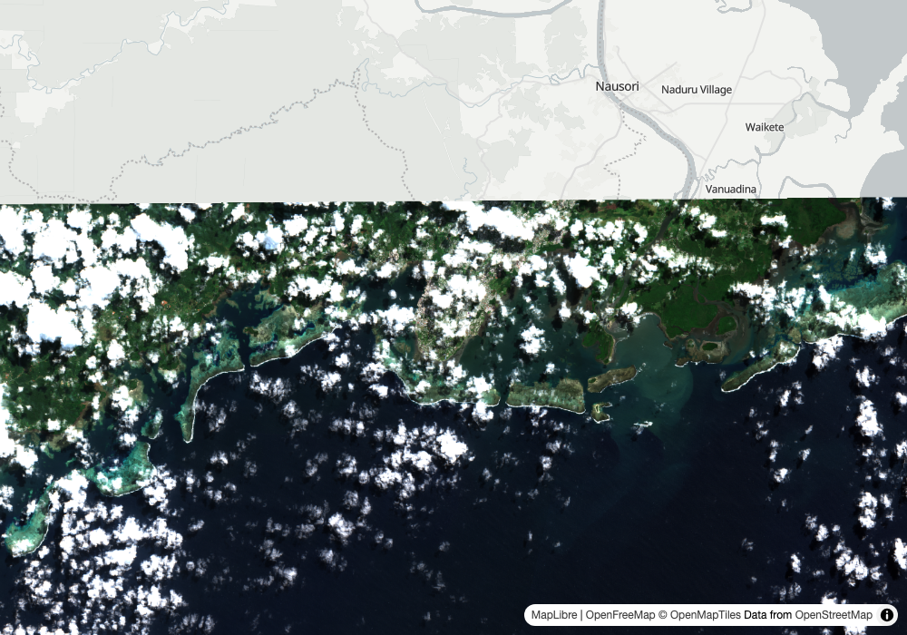
live artifact ↗full read
Our read
The next open-data optical pass is SENTINEL-2A at 2026-10-26 22:21 UTC, at a track distance of 104.7 km on this run (distances move by tens of km between re-runs). After that come Sentinel-1 radar on 2026-10-27 at 06:19 UTC (SENTINEL-1A) and 06:23 UTC (SENTINEL-1C), SENTINEL-3B at 2026-10-27 21:56 UTC, and two more Sentinel-1 passes on 2026-10-28. A pass is a possible capture, not an acquisition plan, and the result carries no swath width, so the track distance cannot be turned into whether Suva is in frame. The freshest Sentinel-2 scene with 20% cloud or less is from 2026-10-07 (16.96% cloud), but it covers only 15.1% of the Suva box. The best single scene is S2C_60KXE_20260825_0_L2A at 10.92% cloud covering 69.8%, and that is what the map shows. A full cover needs two tiles from the same day, which the tool found for 2026-05-27.show the data
geocode("Suva, Fiji")
Suva, Rewa, Central, Viti lat=-18.1415884 lon=178.4421662 bbox=[178.2821662, -18.3015884, 178.6021662, -17.9815884]
next_pass(lat=-18.1415884, lon=178.4421662, days=3)
constellations_source: developmentseed/eo-predictor skipped: []
note: swath geometry from live TLEs, not the acquisition plan — a pass is a possible capture, and imagery reaches public catalogs hours to a day later. Commercial sensors only image if tasked. Richer view: https://developmentseed.org/eo-predictor
eo_predictor_url: https://developmentseed.org/eo-predictor
constellation satellite time_utc track_distance_km kind access
sentinel-2 SENTINEL-2A 2026-10-26 22:21 104.7 optical open
sentinel-1 SENTINEL-1A 2026-10-27 06:19 74.8 radar (day or night, sees through cloud) open
sentinel-1 SENTINEL-1C 2026-10-27 06:23 179.5 radar (day or night, sees through cloud) open
sentinel-3 SENTINEL-3B 2026-10-27 21:56 54.2 optical open
sentinel-1 SENTINEL-1A 2026-10-28 17:51 118.8 radar (day or night, sees through cloud) open
sentinel-1 SENTINEL-1C 2026-10-28 17:56 74.4 radar (day or night, sees through cloud) open
search_imagery("earth-search", ["sentinel-2-l2a"], bbox=, max_cloud_cover=20, limit=5)
count: 5
S2C_60KXE_20261007_0_L2A 2026-10-07T22:31:09.536000Z cloud 16.962641 covers 15.1
S2C_60KXE_20260927_0_L2A 2026-09-27T22:31:09.046000Z cloud 17.665869 covers 15.4
S2C_60KXE_20260917_0_L2A 2026-09-17T22:31:07.399000Z cloud 4.315139 covers 16.1
S2C_60KXE_20260907_0_L2A 2026-09-07T22:31:05.710000Z cloud 12.507947 covers 17.8
S2C_60KXE_20260828_0_L2A 2026-08-28T22:31:05.772000Z cloud 2.432389 covers 19.1
recommended: {"id": "S2C_60KXE_20260917_0_L2A", "covers_aoi_pct": 16.1, "cloud_cover": 4.315139, "reason": "4.3% cloud, covers 16.1% of the area, and newest of 2 near-equal scenes; the clearest (2.4% cloud) is from 2026-08-28. No single scene covers this area and no same-day set does either within these 5 results; raise limit or relax max_cloud_cover to find one"}
search_imagery("earth-search", ["sentinel-2-l2a"], bbox=, max_cloud_cover=20, limit=25)
count: 25
S2C_60KXE_20261007_0_L2A 2026-10-07T22:31:09.536000Z cloud 16.96 covers 15.1 bbox [177.945055, -19.077547, 178.353389, -18.083791]
S2C_60KXE_20260927_0_L2A 2026-09-27T22:31:09.046000Z cloud 17.67 covers 15.4 bbox [177.945055, -19.077547, 178.354522, -18.083783]
S2C_60KXE_20260917_0_L2A 2026-09-17T22:31:07.399000Z cloud 4.32 covers 16.1 bbox [177.945055, -19.077547, 178.357924, -18.083759]
S2C_60KXE_20260907_0_L2A 2026-09-07T22:31:05.710000Z cloud 12.51 covers 17.8 bbox [177.945055, -19.077547, 178.36586, -18.083703]
S2C_60KXE_20260828_0_L2A 2026-08-28T22:31:05.772000Z cloud 2.43 covers 19.1 bbox [177.945055, -19.077547, 178.372095, -18.083659]
S2C_60KXF_20260828_0_L2A 2026-08-28T22:30:51.759000Z cloud 11.61 covers 55.5 bbox [177.940356, -18.173686, 178.577913, -17.178289]
S2C_60KXE_20260825_0_L2A 2026-08-25T22:21:10.712000Z cloud 10.92 covers 69.8 bbox [177.94706, -19.07845, 178.99386, -18.078355]
S2B_60KXE_20260813_0_L2A 2026-08-13T22:31:06.097000Z cloud 2.87 covers 20.1 bbox [177.945055, -19.077547, 178.37663, -18.083627]
S2B_60KXE_20260810_0_L2A 2026-08-10T22:21:11.916000Z cloud 16.96 covers 69.8 bbox [177.947062, -19.07845, 178.99386, -18.078355]
S2C_60KXE_20260709_0_L2A 2026-07-09T22:31:08.232000Z cloud 12.27 covers 18.1 bbox [177.945055, -19.077547, 178.366994, -18.083695]
S2C_60KXF_20260709_0_L2A 2026-07-09T22:30:54.245000Z cloud 16.35 covers 54.5 bbox [177.940356, -18.173686, 178.572837, -17.178328]
S2C_60KXF_20260706_0_L2A 2026-07-06T22:20:58.395000Z cloud 16.21 covers 60.2 bbox [178.013347, -18.174244, 178.983355, -17.174817]
S2C_60KXE_20260629_0_L2A 2026-06-29T22:31:06.693000Z cloud 13.96 covers 19.1 bbox [177.945055, -19.077547, 178.371906, -18.08366]
S2B_60KXE_20260624_0_L2A 2026-06-24T22:31:06.258000Z cloud 0.82 covers 19.1 bbox [177.945055, -19.077547, 178.372001, -18.08366]
S2B_60KXF_20260624_0_L2A 2026-06-24T22:30:52.242000Z cloud 8.10 covers 55.4 bbox [177.940356, -18.173686, 178.577349, -17.178293]
S2C_60KXE_20260609_0_L2A 2026-06-09T22:31:07.480000Z cloud 13.25 covers 17.6 bbox [177.945055, -19.077547, 178.364726, -18.083711]
S2C_60KXF_20260609_0_L2A 2026-06-09T22:30:53.506000Z cloud 16.26 covers 54.1 bbox [177.940356, -18.173686, 178.570581, -17.178346]
S2C_60KXE_20260527_1_L2A 2026-05-27T22:21:10.199000Z cloud 18.62 covers 69.8 bbox [177.947008, -19.07845, 178.99386, -18.078355]
S2C_60KXF_20260527_0_L2A 2026-05-27T22:20:55.706000Z cloud 13.51 covers 60.2 bbox [178.014671, -18.174237, 178.983355, -17.174817]
S2B_60KXE_20260525_0_L2A 2026-05-25T22:31:03.196000Z cloud 17.80 covers 20.1 bbox [177.945055, -19.077547, 178.376631, -18.083627]
S2B_60KXE_20260522_0_L2A 2026-05-22T22:21:08.939000Z cloud 17.16 covers 69.8 bbox [177.947066, -19.07845, 178.99386, -18.078355]
S2C_60KXE_20260510_0_L2A 2026-05-10T22:31:08.185000Z cloud 15.33 covers 14.9 bbox [177.945055, -19.077547, 178.352255, -18.083799]
S2C_60KXF_20260510_0_L2A 2026-05-10T22:30:54.288000Z cloud 14.08 covers 51.9 bbox [177.940356, -18.173686, 178.558737, -17.178438]
S2C_60KXE_20260507_0_L2A 2026-05-07T22:21:13.694000Z cloud 8.07 covers 69.8 bbox [177.946562, -19.07845, 178.99386, -18.078355]
S2C_60KXF_20260507_0_L2A 2026-05-07T22:20:59.226000Z cloud 11.89 covers 60.2 bbox [177.993966, -18.174345, 178.983355, -17.174817]
recommended: {"id": "S2C_60KXE_20260825_0_L2A", "covers_aoi_pct": 69.8, "cloud_cover": 10.919899, "reason": "10.9% cloud but covers 69.8% of the area; the clearest scene (0.8% cloud) covers 19.1%"}
full_coverage_set: date 2026-05-27, union_covers_aoi_pct 100.0 (S2C_60KXE_20260527_1_L2A + S2C_60KXF_20260527_0_L2A)
Learning → The first search lied by omission. With
limit=5 the five newest clear scenes were all tile 60KXE sliver passes covering 15 to 19% of Suva, and the recommendation was a 16.1% scene. Only limit=25 showed the 22:21 UTC passes that cover 69.8%, and the 2026-05-27 same-day set that covers 100.0%. A team that took the first answer would have settled for a scene showing under a fifth of the city. Suva sits near the tile edge, so the limit has to be raised there. The pass list has the same blind spot: it names the 22:21 UTC time, but only comparing it with the scene times above suggests that is the orbit whose scenes covered 69.8%.geocode · next_pass default sensors · search_imagery coverage and limit · possible capture, not a plan
14
offline archive
port authority analyst in Lisbon
Input
Cache 60 days of Sentinel-2 over Lisbon, then search it with the network cut.
Our read
Seventy-five Sentinel-2 scenes for the Lisbon box, from 2026-08-26 to 2026-10-25, were written to one parquet file.
Learning → This time the bbox was passed, so offline worked.
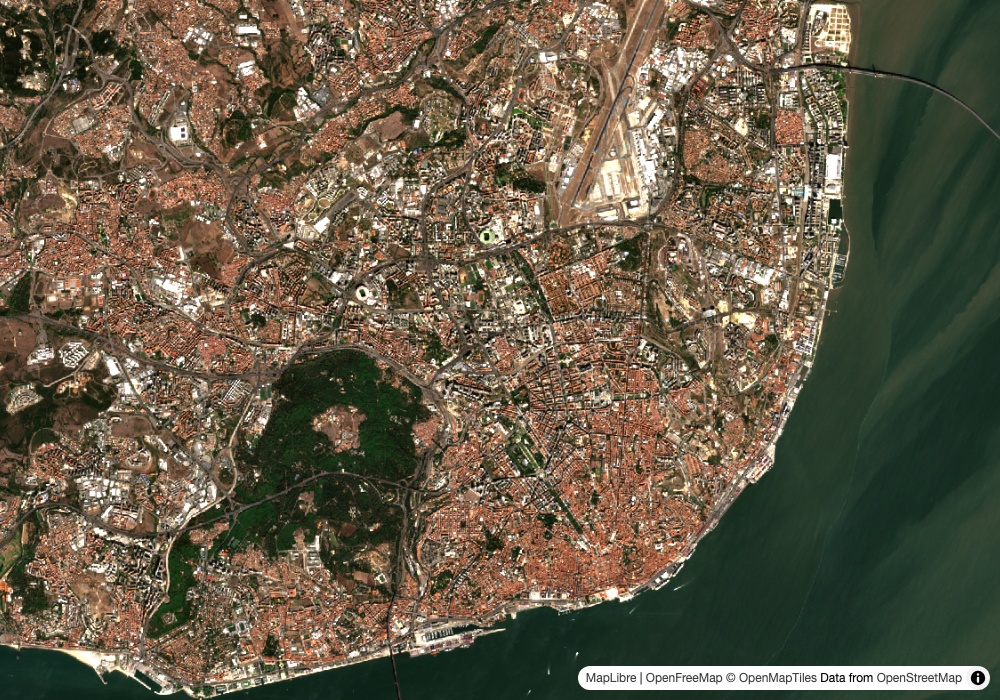
live artifact ↗full read
Our read
Seventy-five Sentinel-2 scenes for the Lisbon box, from 2026-08-26 to 2026-10-25, were written to one parquet file. With HTTPS_PROXY pointed at a port nothing listens on, the live control search failed with Connection refused, and the same search against the parquet file returned five scenes with the network cut. The archive search ran with no network. The result says it is a snapshot as of 2026-10-25 and that newer scenes may exist. The recommended scene is S2C_29SMC_20261018_0_L2A: 0.04% cloud and 100.0% cover of the city box. It was then drawn from the live catalog, with the network back.show the data
geocode("Lisbon, Portugal")
Lisboa, Portugal bbox=[-9.2298356, 38.6913994, -9.0863328, 38.7967584]
write_archive("earth-search", ["sentinel-2-l2a"], bbox=[-9.2298356, 38.6913994, -9.0863328, 38.7967584], datetime_range="2026-08-26T00:00:00Z/2026-10-25T23:59:59Z", out_path="/tmp/ft10/lisbon-s2.parquet")
path: /tmp/ft10/lisbon-s2.parquet
count: 75
datetime_range: ['2026-08-26T11:30:30.278000Z', '2026-10-25T11:30:46.306000Z']
written: 2026-10-25
HTTPS_PROXY=http://127.0.0.1:9 HTTP_PROXY=http://127.0.0.1:9 (nothing listens on port 9)
control, live call under the dead proxy:
search_imagery("earth-search", ["sentinel-2-l2a"], bbox=, max_cloud_cover=20, limit=1)
httpx.ConnectError: [Errno 61] Connection refused
search_imagery("/tmp/ft10/lisbon-s2.parquet", ["sentinel-2-l2a"], bbox=, max_cloud_cover=20, limit=5) same dead proxy
count: 5
archive: {"href": "/tmp/ft10/lisbon-s2.parquet", "written": "2026-10-25", "datetime_range": ["2026-08-26T11:30:30.278Z", "2026-10-25T11:30:46.306Z"], "note": "a snapshot of the catalog as of the written date, not the live catalog: newer scenes may exist. Analysis of these items (preview_item, compute_statistics, render_map) goes through the live catalog: call them with catalog 'earth-search' and the item id."}
S2B_29SMC_20261023_0_L2A 2026-10-23T11:40:43.188Z cloud 8.66 covers 100.0
S2B_29SMD_20261023_0_L2A 2026-10-23T11:40:28.972Z cloud 1.28 covers 38.6
S2C_29SMC_20261018_1_L2A 2026-10-18T11:40:43.827Z cloud 7.19 covers 100.0
S2C_29SMD_20261018_1_L2A 2026-10-18T11:40:37.001Z cloud 0.00 covers 38.6
S2C_29SMC_20261018_0_L2A 2026-10-18T11:40:36.538Z cloud 0.04 covers 100.0
recommended: {"id": "S2C_29SMC_20261018_0_L2A", "covers_aoi_pct": 100.0, "cloud_cover": 0.037735, "reason": "0.0% cloud but covers 100.0% of the area; the clearest scene (0.0% cloud) covers 38.6%"}
network back on
render_map("Lisbon, Sentinel-2 scene of 2026-10-18 (from the archive)", bbox=, [item layer: earth-search / sentinel-2-l2a / S2C_29SMC_20261018_0_L2A, assets ["visual"]])
/tmp/ft10/out/map-lisbon--sentinel-2-scene-of-2026-10-18--from-the-archive.html layers: ['Sentinel-2 true colour, 2026-10-18']
Learning → This time the bbox was passed, so offline worked. The archive search gets no help from a place name, since a place name has to be geocoded over the network, and the previous field-test case showed that failing. The archive note also says analysis goes through the live catalog, so a connection that stays cut can find a scene but cannot draw it. Two entries for the same tile and date (S2C_29SMC_20261018_0 at 0.04% cloud and S2C_29SMC_20261018_1 at 7.19%) sit in the archive; the tool did not say which is the reprocessing.
write_archive · archive search under a dead proxy · live control fails · snapshot note · live render from an archived id
15
veda night lights
NASA Earth science communicator
Input
Show me one VEDA catalog layer over a place it covers.
Our read
A keyword search of VEDA found seven night lights collections, three NO2 ones and ten HLS ones.
Learning → VEDA hands back collections, not places.
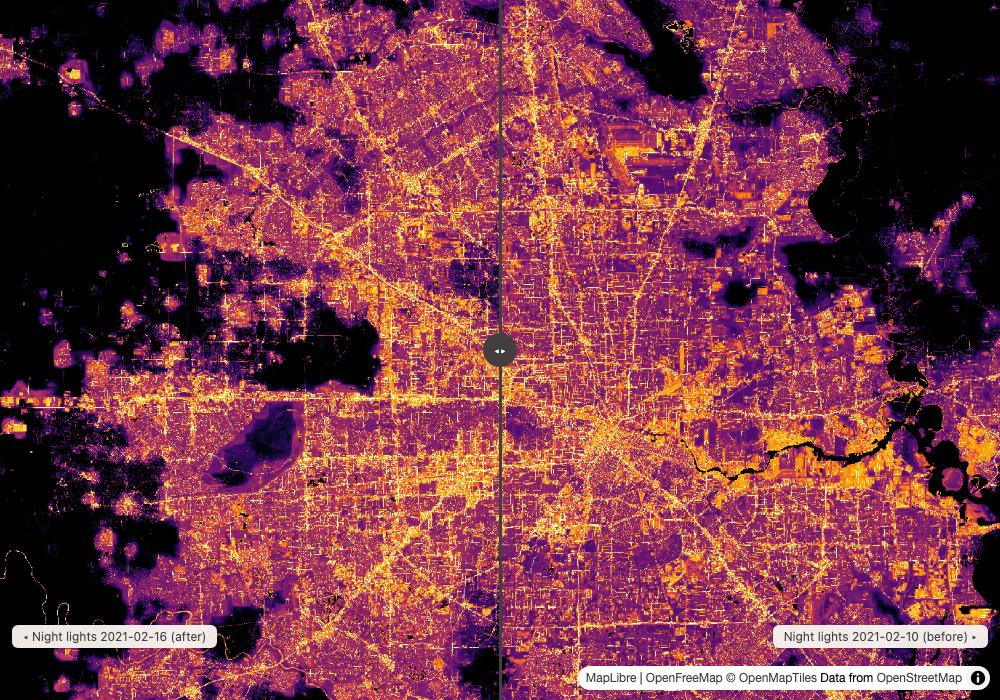
live artifact ↗full read
Our read
A keyword search of VEDA found seven night lights collections, three NO2 ones and ten HLS ones. I picked the Houston deep freeze night lights: Black Marble night lights images for 2021-02-10, before, and 2021-02-16, after the freeze that hit ERCOT's power grid. Both items cover 100.0% of the Houston box, and the collection's license is CC0-1.0. The map puts them in one swipe so the communicator can drag between the two nights. The tool returned compare: True for the two layers. Nothing in the returned numbers says how much light was lost, so the map is the evidence and this reading is not.show the data
search_datasets(catalog="veda", keywords="nightlights") 7 collections: delta-disasters-hd-blackmarble-nightlights, ercot-houston-nightlights-freeze, greenville-nightlights-tornadoes-2024, lakeview-nightlights-tornadoes-2024, nightlights-derecho, nightlights-hd-1band, nightlights-hd-monthly
search_datasets(catalog="veda", keywords="no2") 3 collections: no2-monthly, no2-monthly-diff, OMI_trno2-COG
search_datasets(catalog="veda", keywords="hls") 10 collections, first 8 listed here: darnah-flood, hls-bais2-v2, hls-entropy-difference, hls-l30-002-ej-reprocessed, hls-ndvi, hls-ndvi-difference, hls-s30-002-ej-reprocessed, hls-swir-falsecolor-composite
describe_collection("veda", "ercot-houston-nightlights-freeze")
title: Black Marble Night Lights (Houston, TX 2021 Deep Freeze)
description: Black Marble Night Lights for Houston, Texas during the Deep Freeze Event for both February 10, 2021 (before) and February 16, 2021 (after) that affected ERCOT's power grid.
extent: bbox [-96.0885, 29.2045, -94.5587, 30.3265], 2021-02-10 to 2021-02-16
license: CC0-1.0
assets: {"cog_default": "Default COG Layer"}
search_imagery("veda", ["ercot-houston-nightlights-freeze"], place="Houston, Texas", limit=10)
count: 2
HD_BM_NL_Houston-2021-02-16 2021-02-16T00:00:00Z covers 100.0
HD_BM_NL_Houston-2021-02-10 2021-02-10T00:00:00Z covers 100.0
recommended: HD_BM_NL_Houston-2021-02-16 reason: best-covering scene at 100.0% of the area; this collection reports no cloud cover
tile_url_template("veda", "ercot-houston-nightlights-freeze", "HD_BM_NL_Houston-2021-02-16")
https://openveda.cloud/api/raster/collections/ercot-houston-nightlights-freeze/items/HD_BM_NL_Houston-2021-02-16/tiles/WebMercatorQuad/{z}/{x}/{y}.png?assets=cog_default
render_map(two item layers, same collection)
/tmp/ft10/out/map-houston-at-night--before-and-after-the-2021-deep-freeze.html layers: ['Night lights 2021-02-10 (before)', 'Night lights 2021-02-16 (after)'] compare: True
search_datasets(catalog="veda", keywords="nightlights"), first result, as returned
catalog: veda id: delta-disasters-hd-blackmarble-nightlights gsd: None (no covers_aoi key; reading it raised KeyError: 'covers_aoi')
tile fetched: GET .../tiles/WebMercatorQuad/8/59/105.png?assets=cog_default -> 200 image/png 21022 bytes
Learning → VEDA hands back collections, not places.
search_datasets with catalog="veda" and no place gave no covers_aoi key at all, and the gsd I looked at was None, so the three keyword searches I tried (nightlights, no2, hls) could not say which layers sit over a place I care about. The place check only happened later, in search_imagery for Houston. One tile of the layer came back as a 21022-byte PNG, so it draws; I did not look at how bright it is, and compute_statistics was not called.search_datasets on veda · describe_collection · search_imagery · before and after swipe on render_map
Round 4 — change over time
16
dubai compare
real-estate economist
Input
Show me Dubai's coastline and desert edge in October 2021 against October 2026, in true colour.
Our read
Both ends of the pair are clear Sentinel-2 scenes from the same tile (40RCN): 2021-10-30 at 0.039738% cloud and 2026-10-19 at 0.033182% cloud.
Learning → compare_dates cannot draw true colour.
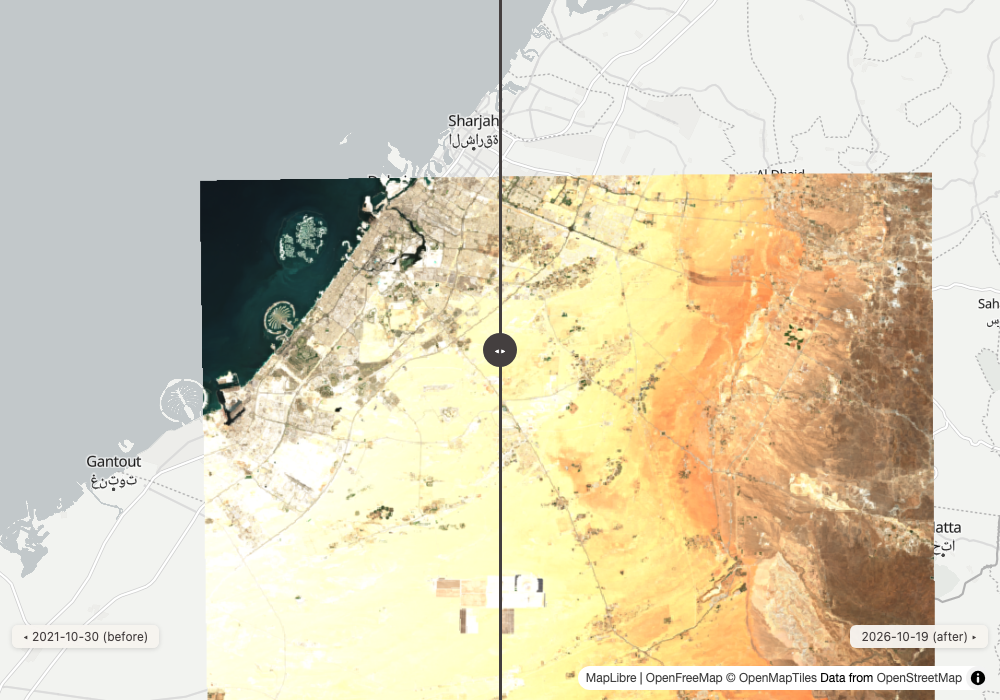
live artifact ↗full read
Our read
Both ends of the pair are clear Sentinel-2 scenes from the same tile (40RCN): 2021-10-30 at 0.039738% cloud and 2026-10-19 at 0.033182% cloud. The page is a true-colour swipe, so a reader can drag the divider across the coast and the desert fringe and judge the change by eye. The numbers alone say little: the vegetation index averaged over the whole tile moved from 0.069 to 0.0795, a delta of 0.0105, and the tool itself warns that the percentage is noise on a baseline this close to zero. The stills do not prove a built-up change by themselves, and a figure for new land or buildings would need a land-cover comparison this run did not make. The swipe covers 56.4% of the Dubai bounding box, so the rest of the frame is blank.show the data
geocode("Dubai, United Arab Emirates")
bbox: [54.7153981, 24.6230801, 56.205298, 25.5250676] source: nominatim
compare_dates(place="Dubai, United Arab Emirates", window_before="2021-10-01T00:00:00Z/2021-10-31T23:59:59Z",
window_after="2026-10-01T00:00:00Z/2026-10-25T23:59:59Z", max_cloud_cover=20) (default expression, NDVI)
tile: 40RCN
after: S2B_40RCN_20261019_0_L2A 2026-10-19 cloud 0.033182 mean 0.0795
before: S2A_40RCN_20211030_1_L2A 2021-10-30 cloud 0.039738 mean 0.069
delta: 0.0105 delta_pct: 15.2
(code read, tools.py compare_dates: the mean is compute_statistics("earth-search", it["collection"], it["id"], expression=expression) with no bbox, so it is over the whole scene)
caveat: "delta_pct is unstable: the baseline mean (0.069) is near zero, so a small absolute change reads as a large percentage. Trust delta over delta_pct."
render_map("Dubai true colour: 2026-10-19 vs 2021-10-30", bbox, [item S2B_40RCN_20261019_0_L2A assets=["visual"], item S2A_40RCN_20211030_1_L2A assets=["visual"]], compare=True)
layers: ["2026-10-19 (after)", "2021-10-30 (before)"] coverage_pct: 56.4
coverage_note: "layers cover 56% of the requested view, so the rest renders blank. Pass the whole full_coverage_set from search_imagery, or tighten bbox to what you have"
Learning → compare_dates cannot draw true colour. Its layers always carry an index expression with the red-yellow-green ramp, so a default call gives an NDVI swipe, not the photograph an economist asked for. I used compare_dates to pick the matched scenes and then drew the true-colour swipe with render_map on the same two ids. Also, one Sentinel-2 tile covers only 56.4% of the Dubai box, and render_map's return says so in a coverage_note rather than filling the gap.
compare_dates scene matching · render_map two-layer true-colour swipe · render_map coverage_note · near-zero baseline caveat
17
kilauea swir
volcano observatory analyst
Input
Kīlauea: draw the latest Sentinel-2 scene in a SWIR composite so hot ground reads, give me the SWIR numbers over the summit caldera, and tell me when we can look again.
Our read
The latest scene is S2B_4QHG_20261018_0_L2A, and it is cloudy: the search listed 35.941234% cloud for the whole tile, so the summit view may be partly covered.
Learning → The geocoder sent me to the wrong island.
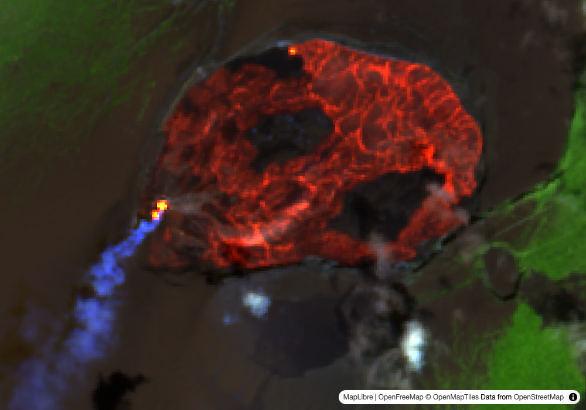
live artifact ↗full read
Our read
The latest scene is S2B_4QHG_20261018_0_L2A, and it is cloudy: the search listed 35.941234% cloud for the whole tile, so the summit view may be partly covered. The cleaner one is 2026-09-28 at 6.979185%, which the tool recommended. The map draws the 2026-10-18 scene with swir22 as red, swir16 as green and red as blue, over the caldera box. Over that box the swir22 reading has a mean of 928.0746 and a median of 751.0, with the 2nd and 98th percentiles at 329.0 and 2582.0 and a maximum of 15131.0. These are raw band values and are not converted to reflectance in this call. The max sits far above the 98th percentile, so a few pixels are much brighter than the rest, which is what hot ground or cloud edge would do, and the numbers cannot tell which. The next possible looks are Sentinel-1 radar at 2026-10-26 04:10 UTC, then optical Sentinel-3B at 20:30 on the same day, Landsat 8 at 2026-10-27 20:42 and Sentinel-2B at 2026-10-28 20:59. On this run the nearest track distances were 60.2 km (Sentinel-1A), 103.5 km (Sentinel-3B), 85.7 km (Landsat 8) and 128.0 km (Sentinel-2B), and they move between runs. They are swath passes, not promised captures.show the data
geocode("Kilauea, Hawaii")
bbox: [-159.422598, 22.1961855, -159.392682, 22.22117] source: nominatim (this is Kilauea on Kauai, not the volcano)
search_imagery("earth-search", ["sentinel-2-l2a"], bbox=[-155.30, 19.38, -155.24, 19.44],
datetime_range="2026-09-25T00:00:00Z/2026-10-25T23:59:59Z", max_cloud_cover=40, limit=10)
S2B_4QHG_20261018_0_L2A 2026-10-18T21:00:03Z cloud 35.941234 covers 100.0
S2C_5QKB_20261013_0_L2A 2026-10-13T21:00:04Z cloud 38.697383 covers 100.0
S2C_4QHG_20261003_0_L2A 2026-10-03T21:00:06Z cloud 36.102527 covers 100.0
S2B_4QHG_20260928_0_L2A 2026-09-28T21:00:04Z cloud 6.979185 covers 100.0
S2B_5QKB_20260928_0_L2A 2026-09-28T21:00:03Z cloud 9.331487 covers 100.0
recommended: S2B_4QHG_20260928_0_L2A "clearest (7.0% cloud) and best-covering (100.0% of the area), not a tradeoff"
compute_statistics("earth-search", "sentinel-2-l2a", "S2B_4QHG_20261018_0_L2A", expression="swir22", bbox=[-155.30, 19.39, -155.26, 19.42])
b1 (swir22_b1): min 54.0 max 15131.0 mean 928.0746371071573 std 615.7237038194792 median 751.0
percentile_2 329.0 percentile_98 2582.0 valid_percent 100.0
clipped_to: [-155.3, 19.39, -155.26, 19.42]
band_scaling: a list of scale/offset entries, beginning {"scale": 0.001, "offset": 0}, {"scale": 0.0001, "offset": -0.1}, {"scale": 0.0001, "offset": -0.1} ... (more than the one band asked for)
next_pass(19.4069, -155.2834, days=5)
SENTINEL-1A 2026-10-26 04:10 track 60.2 km radar (day or night, sees through cloud)
SENTINEL-1C 2026-10-26 04:13 track 107.0 km radar
SENTINEL-3B 2026-10-26 20:30 track 103.5 km optical
LANDSAT 8 2026-10-27 20:42 track 85.7 km optical
SENTINEL-2B 2026-10-28 20:59 track 128.0 km optical
note: "swath geometry from live TLEs, not the acquisition plan - a pass is a possible capture, and imagery reaches public catalogs hours to a day later."
render_map("Kilauea summit: SWIR composite 2026-10-18", [-155.30, 19.39, -155.26, 19.42],
[item S2B_4QHG_20261018_0_L2A assets=["swir22","swir16","red"] rescale="0,4000"])
layers: ["swir22/swir16/red 2026-10-18"]
Learning → The geocoder sent me to the wrong island. "Kilauea, Hawaii" resolved to a place on Kauai (22.2 N, 159.4 W), not the volcano. I used a hand-set caldera box around 19.407 N, 155.283 W instead, so the box is my own choice and not a geocoded one. The statistics call also returned a band_scaling list with many scale/offset entries while the stats are for one band, so the raw number needs care before it is quoted as reflectance.
false-colour SWIR composite via assets · compute_statistics clipped to a bbox · next_pass for the next look · geocoder ambiguity
18
tahoe ndsi
water-supply planner
Input
How much snow is on the high Sierra west of Lake Tahoe now, against early September, and show me the current snow index.
Our read
The box west of the lake has no snowpack to measure on either date.
Learning → There was no snow to measure.
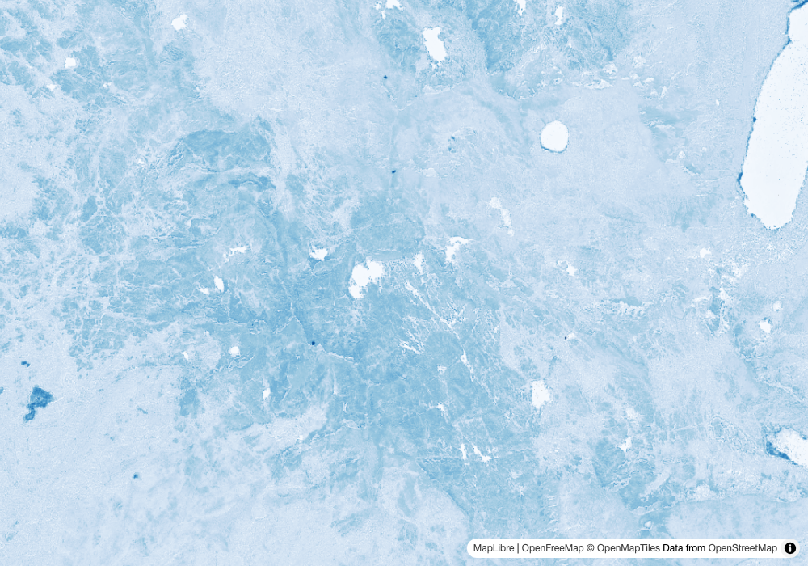
live artifact ↗full read
Our read
The box west of the lake has no snowpack to measure on either date. The mean snow index was -0.4381 on 2026-10-17 and -0.4283 on 2026-09-07, and the 98th percentile was -0.1062 and -0.1046. A snow-covered pixel reads well above zero in this index, and at the 98th percentile both dates are still below it. So the 98 percent of pixels at or under that line read as not snow. The maximum was 0.9574 in October and 0.8504 in September, which means some pixels did read like snow or bright rock on both dates, but they are a tiny tail. For a planner the honest reading is that October 17 shows no snowpack to count yet, and that these two dates cannot show a trend. The map draws the October layer so a reader can see where the few bright pixels are.show the data
search_imagery("earth-search", ["sentinel-2-l2a"], bbox=[-120.22, 38.82, -120.08, 38.92], max_cloud_cover=20)
2026-10-01 to 2026-10-25, latest: S2C_10SGJ_20261017_0_L2A 2026-10-17 cloud 0.032494 covers 100.0
2026-09-01 to 2026-09-10, latest: S2C_10SGJ_20260907_0_L2A 2026-09-07 cloud 0.060432 covers 100.0
compute_statistics("earth-search", "sentinel-2-l2a", "S2C_10SGJ_20261017_0_L2A", expression="(green-swir16)/(green+swir16)", bbox=[-120.22, 38.82, -120.08, 38.92])
min -0.9985955056179775 max 0.9574468085106383 mean -0.43810051234718 std 0.17258173042614272
median -0.4501510574018127 percentile_2 -0.7685185185185185 percentile_98 -0.10616277246354085 valid_percent 100.0
compute_statistics("earth-search", "sentinel-2-l2a", "S2C_10SGJ_20260907_0_L2A", expression="(green-swir16)/(green+swir16)", bbox=[-120.22, 38.82, -120.08, 38.92])
min -0.9990817263544536 max 0.8504372657504908 mean -0.42831627323595167 std 0.17145848534748445
median -0.4404343660172469 percentile_2 -0.7571569595261599 percentile_98 -0.10462192999419842 valid_percent 100.0
render_map("Sierra west of Tahoe: NDSI 2026-10-17", bbox, [item S2C_10SGJ_20261017_0_L2A expression="(green-swir16)/(green+swir16)" rescale="-1,1" colormap_name="blues"])
Learning → There was no snow to measure. I chose a box and two clear dates before looking, and the numbers came back as bare ground both times. A planner who wants a snowpack trend needs a winter or spring pair. Also, the box is my own pick for high ground west of the lake, not a watershed boundary.
NDSI expression through compute_statistics · bbox clip · two-date stats · render_map index layer with colormap
19
austin burn
post-fire recovery coordinator
Input
Find a 2026 wildfire in the western US, compare before and after with a burn index, and give me the numbers over the burn area.
Our read
Signs of a burn show only in the bottom of the distribution.
Learning → Two traps.
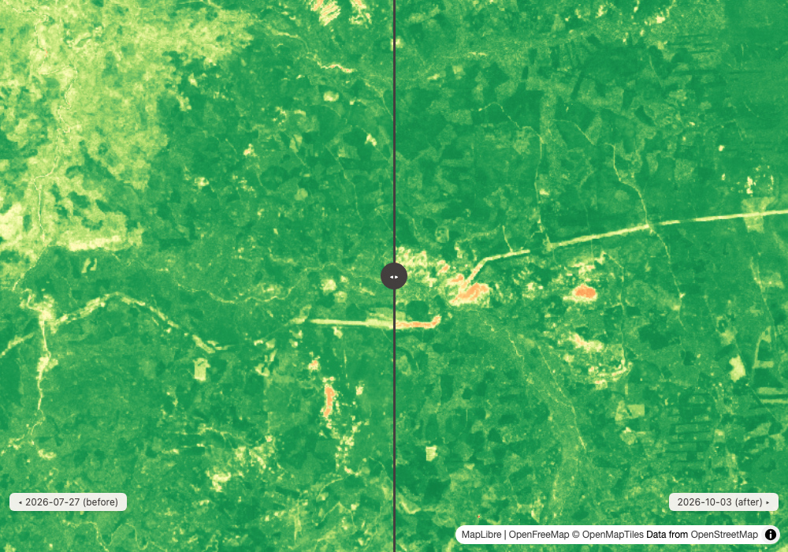
live artifact ↗full read
Our read
Signs of a burn show only in the bottom of the distribution. Over the box around the Austin fire the burn index averaged 0.7047 on 2026-07-27, before the fire was listed on 2026-08-09, and 0.6736 on 2026-10-03, a drop of 0.0311. The median hardly moved (0.7372 to 0.7434), but the spread grew from 0.1265 to 0.2124 and the 2nd percentile fell from 0.2986 to -0.0638. That pattern fits a patch of burnt ground inside mostly unchanged ground: most pixels the same, a tail much lower. The compare tool's own scene-wide number is +0.0088 because it is a whole-tile mean (see the code line in the returned block), and the tile is larger than the box, so it should not be quoted for the burn. I did not measure the scar's size; the feed gave a point only.show the data
active_events(bbox=[-125, 31, -102, 49], days=365)
eonet_note: "EONET listed 481 open events in 365 days" gdacs_error: "The read operation timed out"
eonet entries: 481, of which 302 titled "Wildfire ..." (the rest include "Prescribed Fire ...")
picked: "Wildfire AUSTIN, Clackamas, Oregon" date 2026-08-09 coordinates [-121.944872, 45.025216]
(the feed gives no acreage and no burned-area outline, only a point; the call takes status=open only, so closed fires are not listed)
compare_dates(bbox=[-122.03, 44.96, -121.86, 45.09], window_before="2026-07-20T00:00:00Z/2026-08-05T23:59:59Z",
window_after="2026-10-01T00:00:00Z/2026-10-25T23:59:59Z", expression="(nir-swir22)/(nir+swir22)", max_cloud_cover=20)
tile: 10TEQ
after: S2C_10TEQ_20261003_0_L2A 2026-10-03 cloud 0.000295 mean 0.4908
before: S2A_10TEQ_20260727_0_L2A 2026-07-27 cloud 0.060902 mean 0.482
delta: 0.0088 delta_pct: 1.8
(code read, tools.py compare_dates: the mean is compute_statistics("earth-search", it["collection"], it["id"], expression=expression) with no bbox, so it is over the whole scene)
compute_statistics(... "S2A_10TEQ_20260727_0_L2A", expression="(nir-swir22)/(nir+swir22)", bbox=[-122.03, 44.96, -121.86, 45.09])
min -0.6818181818181818 max 0.9098746081504702 mean 0.704657497242221 std 0.12650326936337866
median 0.7372159090909091 percentile_2 0.29857190302225173 percentile_98 0.8359807905430365 valid_percent 100.0
compute_statistics(... "S2C_10TEQ_20261003_0_L2A", expression="(nir-swir22)/(nir+swir22)", bbox=[-122.03, 44.96, -121.86, 45.09])
min -0.806525128943265 max 0.9990054699154649 mean 0.6736266853781298 std 0.21239665594421625
median 0.7433962264150943 percentile_2 -0.06376360808709176 percentile_98 0.8573770491803279 valid_percent 100.0
Learning → Two traps. First, the compare tool takes a whole-tile mean (no bbox in its stats call), so its delta (+0.0088) points the opposite way from the clipped statistics (-0.0311); the clipped call is the one to trust for a fire box, and the first one is not a bug but easy to misread. Second, active_events asks EONET for open events only, so I could not ask for recently closed fires, and the feed has no size, so Austin was a pick from the list and not the largest fire. The box is my own, drawn around the point, and I did not confirm the scar's extent on the map.
active_events wildfire list · compare_dates with an NBR expression · clipped compute_statistics on both dates · tile-wide versus bbox-clipped delta
20
bend brief
the mayor's office in Bend, Oregon
Input
Give me a conditions brief for Bend: smoke now and tomorrow, the weather, and when satellites can next look.
Our read
The brief says Bend is calm.
Learning → The page tells its own gaps, and misses one.
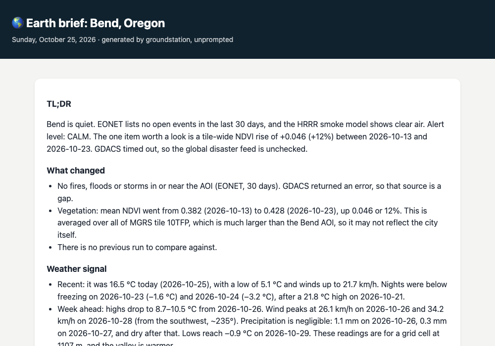
live artifact ↗full read
Our read
The brief says Bend is calm. Smoke is 0.1 µg/m³ now and 0.0 for 2026-10-26 at 22:00 UTC, both clear on the tool's scale, and it is model guidance from NOAA HRRR, not a measurement. The weather section gives 16.5 °C today, freezing nights on October 23 and 24, highs of 8.7 to 10.5 °C from October 26, and a wind peak of 34.2 km/h on October 28 with almost no rain. The latest look is a Sentinel-2 scene from 2026-10-23 at 0.02% cloud covering the area. The disaster alert feed (GDACS) failed, and the page says so in plain words, so the all-clear rests on EONET and the HRRR smoke model. The next looks are not on the page. A separate pass prediction puts the next radar pass at 2026-10-26 14:34 UTC and the next optical Sentinel-3B pass at 18:42, both possible captures, not promises.show the data
uv run briefing/brief.py --place "Bend, Oregon" --days 7 --out /tmp/ft10/r4/brief
[5/5] synthesizing brief with Claude...
brief: brief-bend--oregon-2026-10-25.html map: brief-map-bend--oregon-2026-10-25.html (also .md and .data.json)
page states:
TL;DR: "Bend is quiet. EONET lists no open events in the last 30 days, and the HRRR smoke model shows clear air. Alert level: CALM."
GDACS: "returned an error, so that source is a gap"
Smoke: "now it is 0.1 µg/m³ (clear), and the forecast for 2026-10-26 22:00Z is 0.0 µg/m³ (clear). This is NOAA HRRR model guidance, not a measurement."
Weather: "16.5 °C today (2026-10-25), with a low of 5.1 °C and winds up to 21.7 km/h"
"Nights were below freezing on 2026-10-23 (-1.6 °C) and 2026-10-24 (-3.2 °C)"
"highs drop to 8.7-10.5 °C from 2026-10-26. Wind peaks at 26.1 km/h on 2026-10-26 and 34.2 km/h on 2026-10-28"
"Precipitation is negligible: 1.1 mm on 2026-10-26, 0.3 mm on 2026-10-27"
Fresh eyes: S2C_10TFP_20261023_0_L2A 2026-10-23 0.02% cloud 100% AOI coverage
Vegetation: mean NDVI 0.382 (2026-10-13) to 0.428 (2026-10-23), +0.046 or 12%, over the whole tile 10TFP
the page has no pass times; separate call:
next_pass(44.0614073, -121.3128911, days=3)
SENTINEL-1A 2026-10-26 14:34 track 48.0 km radar (day or night, sees through cloud)
SENTINEL-1C 2026-10-26 14:37 track 72.1 km radar
SENTINEL-3B 2026-10-26 18:42 track 84.9 km optical
SENTINEL-1A 2026-10-27 01:40 track 152.4 km radar
Learning → The page tells its own gaps, and misses one. It names the GDACS failure and warns that the vegetation rise of 12% is averaged over a tile much larger than the city. But the smoke frame sits on the linked map page and the page has no next-pass section, so the full brief the mayor's office asked for took the script plus one more tool call.
briefing/brief.py end to end · smoke numbers with the model caveat · stated source gap · next_pass added alongside
Reproduce
git clone https://github.com/dannybauman/groundstation && cd groundstation
bash scripts/doctor.sh # walks the setup chain, prints the fix
uv run evals/unit_checks.py # 132 offline checks
uv run scripts/field_test.py docs/field-test-2026-10-25-no10.cases.json # rebuilds this page and its stills